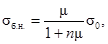
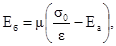
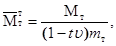
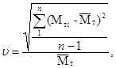
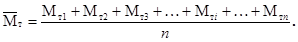
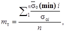
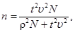
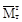

ВЕДОМСТВЕННЫЕ СТРОИТЕЛЬНЫЕ НОРМЫ
|
Министерство |
Министерство |
ПРАВИЛА
ПРОИЗВОДСТВА И ПРИЕМКИ
РАБОТ
НА СТРОИТЕЛЬСТВЕ НОВЫХ,
РЕКОНСТРУКЦИИ И РАСШИРЕНИИ
ДЕЙСТВУЮЩИХ ГИДРОТЕХНИЧЕСКИХ
МОРСКИХ И РЕЧНЫХ
ТРАНСПОРТНЫХ СООРУЖЕНИЙ
ВСН 34-91
Минтрансстрой СССР
Часть 1
МОСКВА 1992
Внесены Министерством транспортного строительства СССР
Подготовлены к утверждению Отделом технического нормирования Главного научно-технического управления и Главным управлением технического нормирования, стандартизации и метрологии Государственного комитета по строительству и инвестициям СССР (В. Л. Кулиничевым).
С введением в действие ВСН 34-91 «Правила производства и приемки работ на строительстве новых, реконструкции и расширении действующих гидротехнических морских и речных транспортных сооружений» утрачивают силу:
1. ВСН 34/I-72; ВСН 34/II-73; ВСН 34/III-72; ВСН 34/IV-72; ВСН 34/V-75; ВСН 34/VI-60; ВСН 34/VII-60; ВСН 34/VIII-60; ВСН 34/IX-60; ВСН 34/Х-78; ВСН 34/XI-60; ВСН 34/ХII-75, ВСН 34/XIII-60; ВСН 34/XIV-60; ВСН 34/XV-60; ВСН 34/XVII-78, ВСН 34/XVIII-78; ВСН 34/XIX-70; ВСН 34/ХХII-78.
2. ВСН 6/118-74.
Согласованы Государственным комитетом по строительству и инвестициям СССР № АЧ-792-8 от 5 ноября 1991 г.
В первой части содержатся восемь разделов, регламентирующих производство и приемку наиболее распространенных видов строительно-монтажных работ.
Во второй части приведены восемь разделов, содержащих требования к производству и приемке работ по возведению основных типов портовых гидротехнических сооружений.
Третья часть содержит приложения к упомянутым выше 16 разделам.
Разработаны Всесоюзным ордена Октябрьской Революции научно-исследовательским институтом транспортного строительства Минтрансстроя СССР совместно с институтами: Союзморниипроектом Минморфлота СССР, Гипроречтрансом Минречфлота РСФСР, Гипрорыбхозом Минрыбхоза СССР, Союзпроектверфью Минсудпрома СССР.
Руководитель темы - канд. техн. наук Ладыченко К. Д.
Ответственные исполнители: разделы 1, 2 - канд. техн. наук К. Д. Ладыченко; разд. 3 - канд. техн. наук М. А. Баранов; разд. 4 - кандидаты техн. наук К. Д. Ладыченко, В. Н. Песочинский, инж. Н. К. Корнилов; разд. 5 - канд. техн. наук В. Ф. Дмитриев, инж. А. И. Грибков; разд. 6 - кандидаты техн. наук А. С. Головачев, К. Д. Ладыченко; разд. 7 - кандидаты техн. наук К. М. Акимова, Ю. М. Анин, Э. А. Виноградова, В. С. Гладков, Н. В. Грановская, Г. С. Рояк, В. Н. Свиридов, В. Д. Малюк; инж. В. В. Шильников, А. В. Никонов, д-р техн. наук Ф. М. Иванов; разд. 8 - канд. техн. наук А. А. Долинский; разд. 9 - канд. техн. наук К. Д. Ладыченко; разд. 10 - кандидаты техн. наук И. И. Денисов, К. Д. Ладыченко; разд. 11 - кандидаты техн. наук К. Д. Ладыченко, И. Е. Школьников, инженеры В. А. Попов, А. Г. Сахарова; разд. 12 - канд. техн. наук К. Д. Ладыченко; разд. 13 - кандидаты техн. наук А. Ф. Высоцкий, В. В. Ковалев, Л. А. Морозов, Г. А. Цатурян, Я. С. Шульгин, Л. Н. Юдин; разд. 14 - кандидаты техн. наук Ю. М. Гуткин, К. Д. Ладыченко, инженеры В. Г. Дмитриев, В. В. Капустин, И. Г. Кухарев, Г. Б. Паулин, А. А. Петров, В. Н. Терещенко, А. С. Тюрин; разд. 15 - канд. техн. наук А. В. Соколов, инж. Ю. М. Омельченко; разд. 16 - кандидаты техн. наук Е. И. Гамаюнов, К. Д. Ладыченко.
Члены межведомственной редакционной комиссии: инж. Д. Ф. Черевач (ГКТУ Морречстроя Минтрансстроя), канд. техн. наук К. Д. Ладыченко (ЦНИИС Минтрансстроя), инж. Г. И. Петров (Союзморниипроект Минморфлота), инж. М. А. Кузьмин (Гипрорыбхоз Минрыбхоза СССР), д-р техн. наук В. Б. Гуревич (Гипроречтранс Минречфлота РСФСР).
|
Министерство транспортного строительства СССР Министерство морского флота СССР Министерство рыбного хозяйства СССР Российский Государственный концерн речного флота «Росречфлот» |
Ведомственные строительные нормы |
ВСН 34-91 Минтрансстрой |
|
Правила производства и приемки работ на строительстве новых, реконструкции и расширении действующих гидротехнических морских и речных транспортных сооружений |
Взамен ВСН 34-60-78 ВСН 6/118-74 |
1.1. Настоящие Правила необходимо соблюдать при производстве и приемке работ по строительству, реконструкции или расширению морских и речных портовых и берегозащитных гидротехнических сооружений, а также гидротехнических сооружений судостроительных и судоремонтных предприятий. Производство и приемка указанных работ в особых условиях (сейсмических районах, в зоне распространения просадочных грунтов) должны выполняться с соблюдением требований соответствующих глав строительных норм и правил и других общесоюзных нормативных документов, действие которых распространяется на работы в этих условиях.
При выполнении данных Правил необходимо соблюдать требования главы СНиП 3.07.02-87.
1.2. Строительная организация обязана вести работы в строгом соответствии с проектом, полученным от заказчика, требованиями СНиП и других нормативных документов (справочное приложение 1., ч. III) включая настоящие Правила.
1.3. Взаимоотношения строительной организации с заказчиком определяются «Правилами о договорах подряда на капитальное строительство», утвержденными Постановлением Совета Министров СССР.
|
Внесены Всесоюзным научно-исследовательским институтом транспортного строительства и ГКТУ Морречстроем Минтрансстроя СССР |
Утверждены |
Срок введения |
1.4. Строительство портовых и берегоукрепительных гидротехнических сооружений должно выполняться специализированными строительно-монтажными организациями.
Для работы по монтажу оборудования, устройству различных коммуникаций, укладке железнодорожных путей, электромонтажных работ, телефонизации и т.п. должны привлекаться на условиях субподряда специализированные организации.
1.5. В соответствии с требованиями СНиП 3.01.01-85 строительство должно осуществляться, как правило, индустриальными поточными методами с применением утвержденных типовых проектов и преимущественным использованием комплектно поставляемых конструкций, изделий, материалов и оборудования. Следует по возможности совмещать отдельные виды работ. При составлении графика строительства надлежит учитывать фактическое число рабочих дней в году при работе как на защищенной акватории, так и у открытых берегов, продолжительность ледостава, приливов и отливов в море и паводков на реках, интенсивность волнения и силу ветра, при которых допускается производить отдельные виды работ.
1.6. Предельные нормативные сроки строительства портовых и берегоукрепительных сооружений, определяющие распределение капитальных вложений по годам, устанавливаются в соответствии со СНиП 1.04.03-85.
1.7. При производстве работ должны выполняться требования по технике безопасности, предусмотренные проектом производства работ, СНиП III-4-80, ведомственными правилами техники безопасности и производственной санитарии, требованиями государственных стандартов о мерах пожаро-взрывобезопасности при производстве строительных работ, правилами эксплуатации судов технического флота и постановлениями капитана порта.
1.8. На зимний период надлежит планировать работы, производство которых обусловлено необходимостью и учетом требования наиболее рационального использования в течение года строительных механизмов, кадров строителей и материально-технической базы.
1.9. Производство работ в зимний период с помощью плавучих средств (установка массивов, погружение свай, отсыпка постелей, призм и др.) разрешается только на акваториях, не имеющих сплошного ледового покрова, когда обеспечена возможность маневрирования судов и прохода их к месту укрытия при получении штормового предупреждения. Необходимо непрерывно поддерживать в незамерзающем состоянии полынью (майну) вокруг судов, перемещая их при помощи лебедок с применением гидравлической или пневматической циркуляционных установок, околки льда и других мероприятий.
Работы в зимний период следует производить, как правило, круглосуточно за исключением перерывов, вызываемых штормами и туманами.
1.10. Материалы и конструкции должны по возможности доставляться без перегрузок к складам на стройплощадку и к зоне действия подъемно-транспортного оборудования.
1.11. Железобетонные элементы должны изготовляться на заводах или полигонах железобетонных конструкций. Изготовление на месте строительства допускается только для нетранспортабельных элементов (массивы, уголковые контрфорсные стенки и т.п.) или когда условия транспортировки затруднены.
1.12. В проектах организации строительства и производства работ должны предусматриваться мероприятия по предупреждению загрязнения атмосферы, почвы и воды на строительной площадке и прилегающих к ней территориях и акваториях запыленностью и загазованностью, производственными отходами и сточными водами. Должны также приниматься меры к ограничению уровня шума и вибрации от работы строительных механизмов.
1.13. Порядок предъявления к приемке законченных строительных объектов должен соответствовать установленному СНиП 3.01.04-87.
2.1. В соответствии с указаниями СНиП 3.01.01-85 до начала основных строительно-монтажных работ должна быть обеспечена подготовка строительного производства1.
1 Должна быть выполнена инженерная подготовка территории и акватории строительства (расчистка и дноуглубление, намыв грунта, планирование площадки, дренажи дорог, подземные и подводные коммуникации, электросети и т.п.).
2.2. Строительные организации на основе решений, принятых в проекте организации строительства, рабочих чертежей и смет составляют на каждое сооружение в соответствии с приложениями 4 и 5 СНиП 3.01.01-85 проект производства работ (ППР), который должен также содержать:
уточненный строительный генеральный план объекта с расположением причалов, постоянных и временных транспортных путей, портов (мест)-убежищ, сетей электроснабжения, крановых путей и зон их действия, площадок укрупнительной сборки, складов и других временных сооружений и устройств, необходимых для строительства;
решения по технике безопасности в соответствии с требованиями строительных норм и правил и ведомственных правил техники безопасности и производственной санитарии.
При строительстве освоенных строительной организацией объектов объем ППР может быть сокращен, но при всех условиях должны составляться календарный план (график), стройгенплан и пояснительная записка.
Для объектов, строящихся по типовым проектам, производится привязка типовых ППР.
ППР на объекты, предусматривающие выполнение работ в действующих портах, заводах и цехах, должны быть согласованы с руководителем действующего предприятия, а на судоходных внутренних водных путях - с управлениями речных пароходств, а также при необходимости с органами Госпроматомнадзора СССР.
Проект производства работ должен быть утвержден и передан на строительство не позднее чем за два месяца до начала работ на объекте.
Строительство объектов без наличия утвержденных проектов производства работ запрещается.
До начала строительства должны быть проведены занятия с ИТР и рабочими по изучению конструкции сооружения, проекта производства работ и соответствующих правил техники безопасности.
2.3. До начала основных работ на строительстве должны выполняться следующие подготовительные работы:
а) создание заказчиком опорной геодезической сети (высотные реперы, главные оси сооружений, опорная строительная сетка, красные линии);
б) закрепление в натуре границ строительной площадки и обвехование акватории, установление межевых знаков, которые также осуществляются заказчиком своими средствами за свой счет;
в) освоение строительной площадки - расчистка территории строительства, снос неиспользуемых в процессе работ строений и другие работы;
г) создание складского хозяйства, мастерских и подсобных производств, обслуживающих строительное производство;
д) устройство или монтаж временных жилых и производственных сооружений, а также возведение полностью или частично тех постоянных объектов порта (предприятия), которые предусмотрены к использованию для нужд строительства (например, энергосеть, водопровод, дороги, жилье и т.д.);
е) инженерная подготовка строительной площадки - первоочередные работы по планировке территории, обеспечивающей организацию временных стоков поверхностных вод, перенос существующих подземных и надземных сетей, устройство постоянных или временных подъездных железнодорожных путей и автомобильных дорог, постройка причалов и в отдельных случаях судоходных трасс, устройство временных или постоянных источников и сетей водоснабжения и энергоснабжения, устройство телефонной и радиосвязи;
ж) организация и постройка полигона по изготовлению железобетонных и бетонных конструкций (парка массивов).
Объем подготовительных работ и последовательность их выполнения определяются из условия бесперебойного производства основных работ и предусматриваются в проекте организации строительства.
2.4. Складские помещения следует организовывать преимущественно в виде центральных баз материально-технического снабжения в узлах сосредоточенного строительства. Базы должны быть оснащены механизмами и устройствами для складирования, хранения и комплексного отпуска материалов.
2.5. При размещении складов надлежит соблюдать следующие условия:
а) сооружать склады на площадках, не подлежащих застройке в течение периода их эксплуатации и не затопляемых паводковыми водами;
б) склады сборных конструкций и изделий располагать в зоне действия монтажных кранов или соответствующего подъемно-транспортного оборудования.
Снабжение отдельных объектов, удаленных от баз строительных организаций и выполняемых прорабскими (мастерскими) участками, должно производиться с центральных баз.
2.6. До начала производства основных работ следует подготовить комплексы машин и механизмов, обеспечивающие механизацию всего рабочего процесса.
2.7. Проверка качества строительных материалов и подбора состава бетона, а также качества бетонных работ, геотехнических характеристик возводимых земляных сооружений и т.д. должны оформляться соответствующими документами и актами.
Строительные материалы, изделия, конструкции и оборудование, применяемые в строительстве, должны соответствовать требованиям проекта, действующим государственным стандартам или техническим условиям, а также условиям, предусмотренным договорами о поставках.
Во всех случаях несоответствия стандартам или техническим условиям доставленных партий материалов и изделий строительные организации обязаны предъявлять заводам-изготовителям и транспортным организациям рекламации в установленном порядке.
Запрещается применение строительных материалов и изделий, не имеющих паспортов, сертификатов и т.п., подтверждающих их соответствие требованиям государственных стандартов или технических условий.
Качество поступающих на строительство элементов сборных конструкций и соответствие их требованиям проекта устанавливается предприятием-изготовителем и указывается в документах, прилагаемых к этим элементам. Перед монтажом элементы должны быть дополнительно освидетельствованы.
3.1. Геодезические работы при возведении портовых гидротехнических сооружений следует выполнять в соответствии с требованиями СНиП 3.01.03-84 и СНиП 3.07.02-87, а также требованиями настоящих Правил.
3.2. Геодезические работы при возведении гидротехнических сооружений должны включать:
а) создание геодезической разбивочной основы (плановой и высотной) в районе строительства;
б) прокладку и закрепление магистральных линий с привязкой их к пунктам геодезической разбивочной основы (в плане и по высоте);
в) разбивку и закрепление основных линий сооружений и границ черпания;
г) разбивку отдельных элементов сооружений;
д) геодезический контроль правильности возведения сооружений;
е) геодезические наблюдения за перемещениями и деформациями строящихся сооружений;
ж) проведение необходимых геодезических работ для составления исполнительной документации.
3.3. До начала основных строительных работ должны быть составлены:
а) генеральный план строительной площадки в единой системе координат с нанесенными пунктами государственной геодезической сети и геодезической разбивочной основы, пунктами для разбивок, осевыми линиями всех сооружений со схемами и исходными числовыми данными для переноса в натуру (условные координаты отдельных точек, а также условные координаты концов и направления магистральных линий, величины и направления углов засечек, расстояния до ориентиров на местности, схемы примыкания к существующим сооружениям или схемы разбивок, гониометрические сетки с нанесенными границами черпания для определения места нахождения земснаряда на участке работ, отметки или превышения и т.д.) с приложением краткой пояснительной записки, содержащей:
исходные данные;
оценку точности геодезической разбивочной основы и гониометрической сетки;
требования к точности разбивок;
метод и точность линейных, уголковых и высотных измерений;
методику производства разбивочных работ;
Примечания: 1. Для удобства выполнения разбивочных работ может быть составлен отдельный от генерального плана строительной площадки разбивочный чертеж основных осей зданий и сооружений.
2. Для детальных геодезических разбивок из генерального плана делают выкопировки отдельных сооружений, зданий (групп сооружений, зданий). На выкопировке или на приложении к ней выписываются координаты привязочных точек сооружений и зданий и схемы привязки сооружений к местным предметам.
б) схема расположения и детальное описание знаков геодезической разбивочной основы с приложением чертежей установленных знаков;
в) каталоги координат и высот пунктов геодезической разбивочной основы и знаков государственной геодезической сети.
Указанные документы и материалы, а также предъявленные в натуре знаки геодезической разбивочной основы, центры, закрепляющие магистральные, основные осевые линии, исходные реперы и марки, передаются по акту (справочное приложение 2, ч. III) представителями заказчика представителям подрядчика (для сооружений 1 категории капитальности, а также в особо сложных случаях разбивки - обязательно в присутствии представителя проектной организации).
3.4. Разбивочные работы выполняются в следующей очередности и состоят из следующих этапов:
а) установки и закрепления основных и рабочих опорных знаков геодезической разбивочной основы с привязкой их к государственной планово-высотной сети или иной, принятой проектом за исходную (свободная сеть с условным началом, планово-высотная основа существующих портовых или иных сооружений и т.п.);
б) установки мареографов и водомерных постов (реек), привязки их к основным опорным знакам или приемки их от изыскательской группы по акту;
в) разбивки и закрепления магистральных линий на территории возводимого сооружения;
г) разбивки от магистральных линий и закрепления основных осей зданий и сооружений;
д) переноса в натуру от пунктов геодезической разбивочной основы или строительной сетки и основных осей сооружений и закрепления вспомогательных линий разбивки отдельных элементов сооружений.
Примечания: 1. Работы по пп. «а - г» выполняются заказчиком, а по п. «д» - подрядчиком.
2. Временные здания и сооружения могут быть привязаны только к местным предметам без использования координат опорной сети.
3. В натуру, как правило, не выносятся одновременно оси всего комплекса сооружений и зданий. Отдельные сооружения и здания выносятся с генплана на местность (разбиваются в натуре) последовательно, в соответствии с календарным графиком строительства.
3.5. В качестве исходных базисных линий основной разбивки следует принимать, как правило, стороны ходов государственной геодезической сети или линии плановой основы существующих портовых сооружений, к которым ведется привязка магистральных линий.
Указанные магистральные линии должны располагаться вдоль береговой полосы, примыкающей к месту возведения сооружений.
Примечание. При постройке сооружений, не связанных с берегом, магистральная линия должна служить основанием для инструментальной разбивки и закрепления точек основной линии сооружения на воде.
3.6. Количество и расположение пунктов высотной геодезической разбивочной основы должна определять и фиксировать на разбивочных чертежах проектная организация с таким расчетом, чтобы обеспечить заданную точность разбивки, быстроту и удобство выноса необходимых отметок на все участки сооружения. Знаки высотной геодезической основы нужно устанавливать вне зоны строительных работ, складирования и транспортировки материалов, в местах, не подверженных осадкам и оползням, размыву и действию ледохода. Знаки должны быть предохранены от смещений и повреждений в процессе производства работ.
В состав высотной основы следует включать также пункты плановой геодезической разбивочной основы.
3.7. Установка реперов и определение их отметок от нуля, принятого в проекте сооружения, должны фиксироваться актом.
3.8. Плановое и высотное положение подводных разбивочных знаков следует определять или по линиям надводной разбивки, смещенным под воду, или путем применения подводных геодезических инструментов (справочное приложение 3, ч. III).
На глубине более 11,5 м следует применять, как правило, подводные геодезические инструменты (см. справочное приложение 3, ч. III).
3.9. Плавучие знаки, устанавливаемые при выполнении работ на акваториях, следует надежно закреплять против воздействий волн, льда и т.п., а также дублировать створами на берегу для возможности быстрого восстановления после повреждений.
Разбивка основных осей сооружений
3.10. Разбивочные работы следует выполнять с точностью, обеспечивающей выполнение требований СНиП 3.01.03-84 и СНиП 3.07.02-87, а также допусков, установленных в проекте.
3.11. Все разбивочныe работы, в том числе и установка разбивочных знаков, должны фиксироваться в журналах геодезических работ с приложением чертежей, на которых указывают все разбивочныe знаки, закрепленные на территории и акватории порта с привязкой их к магистрали.
3.12. Положение разбивочных линий и реперов в плане, а также правильность высотного положения знаков разбивки следует проверять не реже одного раза в месяц. При наличии обстоятельств, приводимых к изменению первоначального положения какого-либо знака разбивки, проверку надлежит производить немедленно. В частности, знаки, установленные на акватории, необходимо проверять после каждого шторма, навала судна и т.п.
3.13. Пункты и знаки геодезической разбивочной основы должны быть сохранены в течение всего периода строительства и переданы заказчику при сдаче сооружений в эксплуатацию по акту (см. справочное приложение 2, ч. III) с приложением схемы расположения знаков и их описания.
3.14. Разбивка вспомогательных линий сохраняется на время производства работ по постройке соответствующего элемента сооружения.
3.15. Все документы по плановым и высотным разбивкам, проверке опорных знаков, определению отметок элементов сооружений и проверке фактических размеров сооружений (акты, чертежи, журналы геодезических работ, подсчеты и др.) необходимо хранить до окончания строительства и сдачи объекта в эксплуатацию.
Разбивка основных точек сооружений по высоте
3.16. Для проведения основных высотных разбивок сооружений используется сеть пунктов высотного обоснования, заложенная до начала строительных работ.
В соответствии с требованиями точности выноса проектных отметок при разбивках применяют:
а) геометрическое нивелирование III и IV класса или техническое нивелирование;
б) тригонометрическое нивелирование;
в) гидростатическое и гидродинамическое нивелирование.
3.17. Перенос в натуру проектных (или вспомогательных) отметок производится способами, обеспечивающими ведение как текущего, так и периодического контроля (прокладкой ходов между двумя реперами сети, замкнутыми ходами или «висячими» ходами, прокладываемыми в прямом и обратном направлениях и т.п.).
Документация по выполненным высотным разбивкам и контрольным измерениям вместе с актом сдачи исходных опорных точек передается производителям строительных работ, а по завершении последних - заказчику.
3.18. Пункты основных высотных разбивок закрепляются грунтовыми реперами; марками на основаниях существующих сооружений; окрашенными знаками высотных разбивок на основаниях постоянных сооружений и другими способами, обеспечивающими постоянство высотного положения знака на период возведения сооружения.
Окраска подводных знаков должна быть белой, желтой или оранжевой.
Знаки высотных разбивок следует располагать так, чтобы можно было постоянно контролировать строительные работы, как правило, с одной станции (без прокладок вспомогательных ходов нивелирования).
3.19. Детальную разбивку элементов сооружений выполняет строительно-монтажная организация по рабочим чертежам отдельных частей сооружений или по специальным разбивочным схемам, привязанным к осям сооружения.
3.20. Во всех случаях детальных разбивок должны быть обеспечены точность, установленная СНиП 3.01.03-84 и СНиП 3.07.02-87, или допуски, предусмотренные проектом.
При детальной разбивке земляных и каменно-набросных конструкций, волноломов, бун и аналогичных сооружений непосредственно от основных осей допускается использовать простейшие геодезические приборы и приспособления (стальные ленты, рулетки, анкеры, отвесы, шаблоны, строительные уровни и т.п.).
3.21. Точки и линии детальных разбивок закрепляют знаками на временных подсобных сооружениях (обноски, подмости, сваи и т.п.) и сохраняют на время строительных работ по возведению того элемента, положение и размеры которого они определяют.
Указанные точки и линии служат также для контроля за строительными работами.
Геодезический контроль в период строительства
3.22. Состояние возводимых сооружений в надводной и подводной части (при помощи водолазов и телевизионных установок) систематически проверяют до сдачи в эксплуатацию наружным осмотром и инструментально.
Порядок и сроки проверок устанавливает главный инженер строительства.
Примечание. Особое внимание должно быть уделено наблюдению за состоянием подводных частей сооружений и их элементов, расположенных на незащищенной акватории, а также за осадками и горизонтальными смещениями как всего сооружения, так и его частей.
3.23. При геодезическом контроле состояния сооружения проверяют:
а) соблюдение проектных размеров, положения и допусков на возводимое сооружение;
б) общую величину перемещений сооружения или его частей, их равномерность и интенсивность нарастания.
Перед проверкой состояния сооружения необходимо выполнить тщательный инструментальный контроль исходных пунктов наблюдений (створные знаки, реперы, контрольные точки и т.п.) с целью определения их незыблемости.
Результаты контрольных проверок и наблюдений необходимо актировать и использовать как исходный материал для составления исполнительных чертежей при сдаче сооружений в эксплуатацию.
3.24. В процессе основного строительства проверяют:
а) при дноуглубительных работах: положение нулей водомерных реек, правильность разработки прорези;
б) при отсыпке каменных и массивовых набросок: соблюдение проектных размеров и допусков, объем созданной отсыпки из камня (массивов) и расход камня (массивов), осадку каменной (массивовой) наброски;
в) при ровнении: соблюдение проектных отметок поверхности ровнения, взаимное высотное положение участков ровнения (по сетке квадратов со сторонами 2 м); наличие и толщину слоя наносов (в случае перерыва работ);
г) при виброуплотнении подводных каменных постелей: правильность установок виброуплотнителя на уплотняемой поверхности подводной каменной постели, величины отказов виброуплотнителя по залогам;
д) при укладке массивов: правильность установки массивов по осевой (боевой) линии, соблюдение заданной проектом фасадной плоскости, правильность укладки массивов в курсах и курсов по высоте, осадку массивовой кладки;
е) при установке массивов-гигантов: правильность установки массивов-гигантов по створам осевых линий и их осадку;
ж) при огрузке массивовых кладок: горизонтальное и вертикальное смещение и ее состояние;
з) при возведении верхних строений: состояние нижележащих частей сооружений (планово-высотными контрольными измерениями), правильность детальных разбивок по откорректированным рабочим чертежам, соблюдение размеров возводимых строений (или их частей) и допусков на их монтаж;
и) при регулировании: правильность намыва территории в плане, крутизну откосов - как надводных, так и подводных (раздельно), высотные отметки территории и отдельных ее частей, уклоны территории - если они заданы проектом, осадку территории и отдельных ее участков, геометрические размеры заполняемых пазух (до начала работ), качество заполнения пазух (отсутствие пустот).
3.25. При производстве на площадке строительства контрольных обмеров, инвентаризации выполненных работ или при приемке заказчиком законченных конструктивных элементов и целых сооружений работники геодезической службы строительно-монтажной организации должны выполнять инструментальные геодезические работы в соответствии с указаниями главного инженера строительства.
Наблюдения за деформациями сооружений в период их возведения
3.26. Геодезические наблюдения за перемещениями и деформациями (осадками, сдвигами, кренами и т.п.) гидротехнических сооружений выполняют по техническому заданию, составленному проектной организацией с учетом назначения и конструктивного решения сооружений и инженерно-геологического строения оснований.
Геодезические наблюдения за деформациями сооружений выполняет заказчик или работники геодезической службы строительно-монтажной организации в случаях, если это обусловлено договором с заказчиком.
При появлении факторов, меняющих нормальные условия работы основания сооружения (резкое возрастание или уменьшение нагрузки, появление трещин, рост деформаций и т.п.), необходимо произвести внеочередной замер деформаций.
В случае перерывов в строительстве наблюдения за деформациями производятся сразу же по окончании работ и перед их возобновлением.
3.28. Наблюдения за деформациями сооружений производятся с целью определения деформаций:
а) сооружения в процессе его возведения в зависимости от роста нагрузки;
б) происшедших после окончания постройки в зависимости от величин эксплуатационных нагрузок, действующих на сооружение.
По результатам наблюдений за деформациями сооружений составляются документы, характеризующие качество основания.
3.29. Точность геодезических наблюдений за деформациями должна соответствовать требованиям СНиП 3.01.03-84 и технического задания, составленного проектной организацией.
3.30. До начала наблюдений за деформациями сооружений определяют отметки грунтовых реперов и производят их плановую привязку к пунктам геодезической разбивочной основы, другим грунтовым реперам и точкам на местности. Плановое и высотное положение грунтовых реперов периодически проверяется.
3.31. На элементах конструкции наблюдаемого сооружения в местах, предусмотренных проектом, закладываются реперные знаки (марки) с полусферической головкой с крестообразной насечкой для планово-высотных наблюдений или острой гранью для высотных наблюдений. Головки и грани должны быть защищены от возможных повреждений при строительстве и во время эксплуатации. Остальные точки, в которых производятся измерения, следует отмечать несмываемой краской и одновременно давать их описание. Например, «береговой угол на верхней горизонтальной плоскости массива со стороны акватории».
3.32. Результаты наблюдений за деформациями записывают в специальный журнал (см. справочное приложение 2 ч. III), который служит исходным материалом для составления графиков измерения деформаций и величины нагрузок в зависимости от времени. При сдаче сооружения в эксплуатацию все реперы и знаки (марки), документация на них и данные наблюдений передаются заказчику для дальнейшего наблюдения за сооружением.
К журналам прилагают:
а) схему расположения наблюдаемых реперов и марок с фотоснимками, определяющими их местонахождение;
б) схематический план и разрезы сооружения с нанесенными на них контрольными знаками (марками);
в) техническую схему участка.
3.33. Все случаи появления трещин в сооружении или расстройства швов должны быть немедленно зафиксированы в журнале, где указываются дата возникновения дефекта, его характер и вероятные причины повреждения. К журналу прилагают зарисовки и по возможности фотографии участков деформации.
О всех случаях появления таких деформаций строящегося сооружения должны быть поставлены в известность заказчик, проектная организация и подрядчик.
3.34. Все данные наблюдений за деформациями, полученные в период строительства, прилагаются к актам сдачи сооружения в эксплуатацию и хранятся вместе с результатами дальнейших наблюдений за деформациями, производимых организацией, эксплуатирующей сооружение.
3.35. Наблюдения за деформациями сооружения в плане выполняют (с учетом указаний п. 3.27) по контрольным знакам (маркам) путем непосредственных промеров отклонении последних от закрепленного створа, методом условных засечек с берегового базиса или другими методами.
По данным указанных промеров вычерчивается график смещения сооружения в горизонтальной плоскости.
3.36. Наблюдения за изменением наклонов отдельных частей сооружения (с учетом указаний п. 3.27) выполняются с помощью непосредственных замеров уклономерами, измерениями расстояний от точек исследуемой грани сооружений до отвеса, а также путем последовательных нивелировок верхней плоскости наблюдаемой части сооружения.
По полученным данным вычерчиваются графики изменения наклонов частей сооружения.
При измерении уклонов уклономерами последние должны устанавливаться на постоянные марки.
Дноуглубительные работы. Общие положения
4.1. Правила настоящего раздела следует соблюдать при выполнении строительных дноуглубительных работ в любых грунтах, за исключением скальных.
4.2. Дноуглубительные работы выполняются земкараванами, состав которых должен обеспечивать осуществление требуемой технологии и соответствовать условиям и срокам выполнения задания.
4.3. Типы дноуглубительных снарядов для выполнения работ выбираются на основе технико-экономических расчетов в зависимости от объема, состава и сроков выполнения работ, природных условий и требований охраны окружающей среды.
Все применяемые при производстве работ суда и плавучие средства должны соответствовать требованиям по поднадзорности Регистра СССР или Речного Регистра.
4.4. Дноуглубительные работы должны выполняться в полном соответствии с утвержденным проектом требованиями СНиП 3.02.01-87 и настоящих Правил.
При ремонтно-эксплуатационном дноуглублении работы могут выполняться по техническому заданию (наряду-заданию), выданному заказчиком, содержание которого должно соответствовать указаниям п. 4.10.
Отступления от решений, принятых в утвержденном проекте производства работ или техническом задании, должны быть согласованы с заказчиком и с органами охраны окружающей среды.
4.5. Геодезические и промерные работы выполняются в соответствии с требованиями разд. 3 настоящих Правил.
4.6. В проекте производства работ или техническом задании должна быть дана привязка к постоянным реперам на местности.
4.7. Документация на производство дноуглубительных и намывных работ при возведении портовых гидротехнических сооружений должна составляться в соответствии со СНиП 3.01.01-85.
Проект организации строительства должен предусматривать:
место, последовательность и технологию производства дноуглубительных работ и отвала извлекаемого грунта;
решения по условиям эксплуатации углубляемых акваторий и каналов в период производства работ, очередность разработки участков в увязке с другими объектами строительного комплекса;
меры, обеспечивающие сохранность существующих сооружений, вблизи которых должны работать земснаряды;
обеспечение безопасности работы земкараванов;
число и место расположения портов (мест)-убежищ; мощность и число дежурных охранных буксиров; рациональное время для производства работ;
маршруты движения шаланд и самоотвозных землесосных снарядов к месту отвала грунта и на базы с учетом особенностей судоходства в районе работ и наличия ограничений в плавании;
места установки створных знаков, опорных пунктов и гониометрическую сетку, охватывающую все пространство рабочих перемещений земснарядов;
места и способы сдачи подсланевых и бытовых вод, мусора;
места и способы приемки топлива и воды;
координаты акватории и территории, отводимых для отвала грунта.
Проект организации строительства должен быть согласован с органами охраны окружающей среды, со строительными организациями, которым поручено строительство, а в случаях, когда строительная организация еще не определена, - с вышестоящей организацией или соответствующим министерством и ведомством, а также с местными органами советской власти.
На подводный отвал грунта должно быть получено разрешение Госкомгидромета.
4.8. Проект производства дноуглубительных и намывных работ должен содержать:
обоснование выбранного способа производства работ, требуемого состава судов и других технических средств;
ведомость подготовительных и вспомогательных работ;
ведомость объемов дноуглубительных работ и условий их производства;
расчет основных производственных показателей земснаряда и грунтоотвозного флота;
расчет рабочего и календарного периода;
рекомендуемые режимы работы судов земкаравана;
мероприятия по обеспечению судов земкаравана топливом, пресной водой, эксплуатационными материалами и навигационным ремонтом;
технико-экономические показатели и эффективность работ;
план-график выполнения дноуглубительных работ;
график работы грунтоотвозного флота;
комплекс мероприятий, предусматривающих навигационную безопасность земснарядов и других судов, входящих в состав земкаравана;
технологические планы или схемы производства работ и схемы расстановки створных бровочных знаков и опорных пунктов;
чертежи конструкций и сооружений на картах намыва, швартовых устройств, эстакад, дюкеров и других временных вспомогательных сооружений, необходимых для производства дноуглубительных работ и для отвала грунта;
схему временной базы обслуживания;
мероприятия по охране окружающей среды при выполнении работ.
Проект производства работ должен быть утвержден главным инженером организации, производящей дноуглубительные работы, согласован с заказчиком и генподрядчиком и передан исполнителю не позднее, чем за два месяца до начала работ на объекте.
4.9. Исходными материалами в рабочем проекте (рабочей документации) для составления проекта производства дноуглубительных работ должны служить:
морские карты или топографические планы в масштабах от 1:25000 до 1:5000 в качестве ситуационного материала, охватывающие район работ, путь следования к отвалу грунта, собственно отвал грунта, пункты приема топлива и воды, базы-убежища;
планы объектов работ в масштабах от 1:2000 до 1:500 и в особых случаях (например, подработка у причальных сооружений) - до 1:200. Глубины на планах должны быть укачаны с подробностью, предусмотренной действующими инструкциями.
На планах должны быть нанесены промеры глубин в пределах рабочих прорезей и прилегающего пространства на расстоянии 200 м за границами черпания, а для земснарядов производительностью более 400 м3/ч - до 300 м.
Рельеф прилегающей территории следует давать в горизонталях с подробностью, достаточной для определения мест закладки якорей, установки створных и бровочных знаков.
На планах должны быть нанесены глубины акватории или отметки местности, а также указаны кабели, дюкеры, подводные сооружения и другие препятствия;
продольные профили разрабатываемой выемки с горизонтальным масштабом от 1:2000 до 1:500 и поперечные профили с горизонтальным масштабом от 1:500 до 1:100 и вертикальными масштабами от 1:200 до 1:50 в зависимости от характера объекта.
На профилях должны быть нанесены геологические разрезы, а также указаны места заложения буровых скважин с привязкой скважин к опорным точкам;
гидрологические и метеорологические характеристики районов работ;
результаты полевых и лабораторных исследований грунтов по основным характеристикам действующей классификации грунтов, определяющих группу или род грунта по трудности разработки, а также характеристика грунтов по их химическому и бактериологическому загрязнению;
контуры сооружений, для которых выполняются дноуглубительные работы;
стройгенплан строительства и проект организации строительства;
список, назначение и расположение существующих и перспективных объектов хозяйственно-питьевого, культурно-бытового водопользования и промыслового значения в районе проведения работ, в том числе, рыбохозяйственная характеристика района;
размер облака мутности в зонах дноуглубления и отвала грунта;
ожидаемое изменение гидрологического режима (скорости, направления течений, температурные изменения водной среды);
местоположение и площадь нарушаемых донных поверхностей;
интенсивность загрязнения водной, среды вредными веществами.
4.11. Проект производства работ должен разрабатываться с учетом всех необходимых мероприятий по охране водного объекта от загрязнения, засорения и истощения, а также вредного воздействия вод, как в процессе строительства, так и при дальнейшей эксплуатации строящегося сооружения.
4.12. Производство дноуглубительных работ допускается только после того, как заказчик передаст подрядчику по акту все нижеперечисленные результаты работ и документы:
разбивку в натуре базиса и границ рабочих прорезей и установку створных знаков;
обвехование места отвала грунта и установку светящихся буев;
обстановку судового хода для движения грунтоотвозных судов в дневное и ночное время;
данные об установке основной и контрольной водомерных реек и увязке их нулей с условным отсчетным уровнем и с постоянным репером;
контрольные промеры и проверенные по ним подсчеты проектных объемов работ;
обвехование и при необходимости уборка телефонных и электрических кабелей, трубопроводов и прочих подводных сооружений в зоне производства дноуглубительных работ, на судовых ходах и месту отвала и на подводных отвалах;
устройство первичного обвалования береговых отвалов и водосливов с них;
материалы водолазного обследования дна акватории и документы, свидетельствующие об удалении предметов, мешающих производству работ;
разрешение органов охраны окружающей среды на дноуглубительные работы и отвал грунта;
справку об отсутствии или наличии предполагаемой засоренности грунта на объекте работ взрывоопасными предметами.
4.13. Осевые и бровочные створные знаки устанавливаются с обязательным дублированием створными знаками на берегу или гониометрической сеткой для обеспечения возможности восстановления и проверки положения плавучих знаков.
Размеры створных знаков и расстояний между ними должны соответствовать требованиям и рекомендациям действующих технических инструкций по обслуживанию навигационного оборудования на морских и внутренних водных путях.
Границы промежуточных участков, места поворота разрабатываемой прорези в случае надобности могут обозначаться створами, буями или вехами.
4.15. Обвехование мест подводных отвалов и обстановка судовых ходов к местам подводного или берегового отвала должны быть выполнены в полном соответствии с правилами морского и речного судоходства и должны обеспечивать безопасное круглосуточное движение грунтоотвозных судов.
4.16. Обвехование телефонных и электрических кабелей, трубопроводов, газопроводов и прочих подводных сооружений производится по контуру границ допустимого приближения земснаряда к сооружениям. Границы в каждом случае согласовываются с организацией, ведающей эксплуатацией данного сооружения.
Если участки работ пересекаются воздушной телефонной или электрической линиями, то возможность работы под ними также должна быть согласована с организациями, эксплуатирующими данные линии.
4.17. Водомерные рейки должны быть надежно закреплены и защищены от повреждений. Рабочую рейку устанавливают у места работы земснаряда и переставляют по мере его передвижения. Доступ к рейке должен быть свободен. Ее следует устанавливать таким образом, чтобы обеспечить удобный отсчет отметки уровня воды.
4.18. Подготовительные работы, за исключением указанных в п. 4.14, выполняются заказчиком, однако часть указанных работ может быть выполнена подрядчиком на договорных условиях.
4.19. При производстве дноуглубительных работ должны соблюдаться международные Правила предупреждения столкновения судов в море, Правила плавания по внутренним водным путям РСФСР, указания извещений мореплавателям обязательного постановления по порту, к которому относится район производства дноуглубительных работ, ведомственные инструкции по обеспечению безаварийной эксплуатации судов дноуглубительного флота, Инструкция о мерах предосторожности при производстве дноуглубительных работ в условиях предполагаемой засоренности грунта взрывоопасными предметами, общие и предусмотренные проектом или техническим заданием (нарядом-заданием) требования по охране окружающей среды.
4.20. При производстве дноуглубительных работ в местах возможного выделения вредных или огнеопасных газов, а также засоренности грунтов вредными химическими веществами необходимо осуществлять мероприятия, предписанные органами противопожарного и санитарно-эпидемиологического надзора.
4.21. Дноуглубительные работы следует вести с разделением при необходимости всей ширины углубляемого участка на отдельные рабочие прорези, руководствуясь соображениями обеспечения при высоком качестве работ наибольшей производительности земснаряда, с учетом его конструктивных особенностей, а также при работе на транзите с соблюдением требований судоходства. Ширина рабочей прорези не должна превышать 110 м. Принятая в проекте ширина рабочей прорези по условиям работы на объекте может изменяться на основании решений, согласованных с заказчиком и проектной организацией.
4.22. Допускаемые переборы по глубине подводных выемок против проектных размеров не должны превышать величин, указанных в табл. 5.5 и 5.6 СНиП 3.02.01-87.
Для земснарядов с производительностью, не указанной в этих таблицах, должны определяться местные нормы, утверждаемые в установленном порядке.
4.23. Рабочая глубина грунтозабора принимается равной сумме проектной глубины и багермейстерского запаса по глубине. Багермейстерский запас назначается в зависимости от конструктивных особенностей рабочих устройств земснаряда, его технического состояния и разрабатываемого грунта, просора грунта из черпаков, лотков земснаряда, из трюмов грунтоотвозных шаланд, неплотностей рефулерного грунтопровода, колебаний горизонта воды, а также с учетом заносимости в период производства работ до исполнительного промера; при работе у гидротехнических сооружений величина багермейстерского запаса устанавливается по согласованию с организацией-владельцем этих сооружений и проектной организацией.
4.24. При дноуглублении для нужд судоходства и для котлованов плавучих доков недоборы грунта по глубине не допускаются.
4.25. При разработке подводных выемок, в которых недопустимо нарушение естественной структуры грунта ниже подошвы фундамента, бетонной подготовки или каменной отсыпки, в проекте должен быть предусмотрен защитный слой, достаточный для багермейстерского запаса.
Последующая подчистка до отметки ненарушенной структуры грунта осуществляется по специальной технологии, разрабатываемой проектной организацией.
4.27. Допуски на точность работы земснарядов по ширине и глубине, согласно указаниям пп. 4.22 - 4.28, применяются на защищенных от ветрового волнения акваториях со стабильным или регулярно меняющимся горизонтом воды, когда разбивочныe геодезические знаки и ориентиры допускают определение положения снаряда на акватории с требуемой точностью.
Во всех остальных случаях точность работы дноуглубительных снарядов и объем грунта, извлекаемый из слоя допускаемого перебора, определяются в проекте или техническом задании (наряде-задании) на дноуглубительные работы. Объем грунта, фактически извлеченный земснарядом в пределах допускаемых переборов по глубине и ширине, учитывается и оплачивается по данным исполнительных промеров.
4.28. При отсутствии особых указаний в проекте или техническом задании (наряде-задании) допускается увеличение перебора грунта по глубине и ширине сверх размеров, предусмотренных в пп. 4.22, 4.26, но без включения дополнительных объемов в оплачиваемые работы. В процессе работы глубина опускания грунтозаборного устройства дноуглубительного снаряда должна корректироваться при каждом изменении уровня воды на 0,1 м.
4.29. При работе в открытой части каналов и на объектах, расположенных на незащищенной акватории, в состав земкараванов должен входить охранный буксир надлежащей мощности.
4.30. При производстве дноуглубительных работ средствами гидромеханизации с одновременным использованием извлекаемого грунта для его намыва в сооружение или в отвал кроме указаний настоящего раздела, надлежит руководствоваться указаниями разд. 5 настоящих Правил.
4.31. При встречающихся неучтенных проектом препятствиях в процессе выполнения работ (выходы скалы или скального грунта, особенно больших валунов, затопленных судов или сооружений и т.п.) следует зафиксировать местоположение препятствия на местности и на плане участка работ и вызвать представителей заказчика и проектной организации для принятия решений по возникшему затруднению.
Производство работ в зимних условиях
4.32. Дноуглубительные работы в зимних условиях осуществляются в соответствии с проектом производства работ, предусматривающим дополнительные мероприятия по созданию условий, обеспечивающих возможность эффективной и безопасной работы дноуглубительного и обслуживающего флота.
Производство работ в зимних условиях по проекту производства работ, составленному для летних условий, не допускается.
4.33. При работе в зимних условиях должны использоваться суда, имеющие соответствующий ледовый класс Регистра и технико-экономические характеристики, удовлетворяющие условиям работы в условиях отрицательных температур.
4.34. В зимних условиях работы по извлечению грунта, следует вести, как правило, без перерывов. В случае вынужденных перерывов в работе земснаряда черпаковая цепь и пульпопровод должны быть освобождены от грунта и воды.
Контроль качества в процессе производства работ
4.35. Не ранее чем за 10 дней до начала дноуглубительных работ следует проверить: соответствие фактических глубин, принятым в проекте (при необходимости произвести нивелировку берега и составить план объекта), а также правильность разбивки прорези, установки створных знаков, вех и водомерных реек, о чем надлежит составить соответствующие акты.
4.36. По ходу работ дноуглубительного снаряда систематически проверяются:
производительность снаряда;
состояние створных знаков, плавучей обстановки и водомерных реек;
характеристика разрабатываемого грунта (по пробам);
глубина прорези;
ширина рабочей прорези по контрольным замерам между нижними бровками выемки.
Качество работ (состояние фактических глубин и ширина прорези) контролируется по планшетам контрольных промеров, выполняемых не реже одного раза в 10 дней, а также ежемесячным исполнительным промером участка работ. Результаты измерений записываются в журнал работ или актируются. Исполнительные промеры выполняются не позднее чем через 10 суток после окончания работ. Формы актов контроля дноуглубительных (рефулерных) работ и контрольного замера приводятся в справочном приложении 2, ч. III.
4.37. Контрольные пробы связных грунтов следует отбирать из черпаков или с разрыхлителя снаряда, а на самоотвозном землесосе - с грунтоприемника. Пробы несвязных грунтов отбирают водолазы либо используют для этой цели грунтоносы. Отбор проб производится в начале работы и при каждом переходе снаряда на участки с другими грунтами. Места прорези, на которых были отобраны пробы грунта, отмечаются на плане, а время отбора и характеристики проб - в судовом журнале. Отобранные пробы направляют в лабораторию для определения свойств разрабатываемого грунта.
4.38. Выполненные работы принимает технический надзор заказчика при участии представителей подрядчика и земкаравана.
4.39. Если продолжительность работы на данном объекте превышает одни месяц, дноуглубительные работы принимают ежемесячно на основании исполнительных промеров. В районах с интенсивной заносимостью (в месяц более 10 см) приемка работ и исполнительные промеры осуществляются по участкам длиной в 100 м.
4.40. Сетка исполнительных промеров должна соответствовать сетке предварительных промеров.
Не разрешается выполнять промеры при волнении более двух баллов.
Исполнительные промерные профили должны быть продлены за пределы границы рабочих прорезей на расстояние, охватывающее зону формирования откосов.
4.41. Откосы и поверхность дна прорезей принимаются естественно сложившимися к моменту исполнительных промеров. Планировка откосов и ровнение дна подводных выемок дноуглубительными земснарядами не производится.
4.42. Объем извлеченного грунта определяется по фактическому обмеру выработки в пределах проектного очертания выемки; объем переборов грунта учитывается отдельно.
Предварительные промеры выполняются не ранее чем за 10 суток до начала работы земснаряда.
Исполнительные промеры выполняются в соответствии с указаниями пп. 4.36, 4.40.
Объем текучих илов и заиленных мелкозернистых песков разрешается определять по замерам загрузки грунтового трюма.
4.43. При добыче и доставке инертных материалов (песок, гравий, галька) количество доставленного грунта определяется по обмерам в трюмах шаланд или самоотвозных земснарядов. Для песка, гравия и гальки объем грунта в трюме принимается за объем в естественном сложении.
При доставке инертных материалов в люковых шаландах технология и условия определения объемов доставленных материалов устанавливается проектом по согласованию с организацией-исполнителем работ.
4.44. В актах приемки выполненных работ дается оценка качества работ и устанавливается их соответствие утвержденному проекту, рабочим чертежам, требованиям строительных норм и правил.
4.45. Документация, представляемая при приемке дноуглубительных работ, должна содержать:
записи промеров глубин, журнал траления (водолазного обследования), рабочий журнал земснаряда (выписки из судового журнала);
план котлована (прорези) с нанесением границ сдаваемого участка, проектных и фактических отметок поверхности основания, координат основных точек границ сдаваемого участка и линий разбивки котлована, привязанных к основным линиям сооружений;
исполнительные поперечные профили котлована (прорези);
характеристику грунтов в основании и сопоставлении их с проектными характеристиками (для котлованов под сооружения);
акт промежуточной приемки, разбивки и закрепления оси котлована и его границ (линии прорези);
план промеров глубин до и после производства дноуглубительных работ с нанесением рабочих и проектных границ, черпания;
ведомость подсчета объема дноуглубительных работ;
характеристики грунтов, подтвержденных результатами лабораторных исследований.
4.46. Производство намывных работ с использованием грунта, извлекаемого при дноуглублении, должно выполняться в соответствии с разд. 5 настоящих Правил.
4.47. Строительные, дноуглубительные и взрывные работы, добыча полезных ископаемых на водных объектах или в прибрежных полосах (зонах) водоемов, влияющие на состояние вод, должны производиться по согласованию с органами по регулированию использования и охране вод, исполнительными комитетами местных Советов депутатов трудящихся и другими органами в соответствии с законодательством Союза ССР и Союзных республик. На производство подводного отвала грунта должно быть получено разрешение органов Государственного комитета СССР по гидрометеорологии.
Эксплуатационные землечерпательные работы на судоходных путях, связанные с обеспечением судоходных условий, проводятся при соблюдении интересов других водопользователей и с сообщением о таких работах органам по регулированию и использованию вод.
4.48. Сроки производства дноуглубительных работ и применяемые технические средства (черпаковые снаряды, землесосы и т.п.) должны назначаться с учетом природных биологических ритмов в зоне производства работ (нерест, миграция рыб и т.п.).
4.49. Сброс грунта должен осуществляться с соблюдением размещения его строго в границах площади, отведенной для подводного отвала.
4.50. С целью предотвращения распространения загрязненного грунта при его подводном отвале следует поверхность завершенного отвала прикрывать биологическим чистым песком, толщина слоя которого устанавливается проектом.
5.1. Разработке грунта должны предшествовать завершение и приемка всех разбивочных и подготовительных работ, выполняемых на территориях, отведенных для выемки и намыва грунта в сооружение или отвалы.
При производстве разбивочных работ следует руководствоваться указаниями, изложенными в разд. 3 настоящих Правил.
5.2. Подготовительные работы следует выполнять в соответствии с требованиями главы СНиП 3.01.01-85.
5.3. Производство вскрышных работ в карьерах и выемках назначается проектом организации строительства, определяющим места складирования снимаемого плодородного слоя почвы из оснований земляных сооружений, с поверхностей карьеров и выемок, с целью использования этого грунта при рекультивации территорий.
Целесообразность вскрышных работ на болотах второй и третьей группы определяется при проектировании организации работ.
5.4. Порядок производства работ на судоходных речных и морских акваториях, состав и расположение обстановки судового хода должны быть согласованы с местными организациями речного или морского флота.
Разработка грунта плавучими землесосными снарядами
5.5. Строительные земснаряды должны применяться для разработки грунта с целью устройства котлованов, каналов и других профильных выемок, а также намыва земляного полотна дамб, плотин и других земляных сооружений как из профильных выемок, так и специально отведенных карьеров.
5.6. Запас полезных грунтов карьера должен обеспечить потребность строительства. При исчислении запаса полезного грунта исключается вскрыша, линзы некачественного грунта, унос мелких фракций пылеватого песка, пыли, глинистых частиц, недобор по дну грунта, оставление целиков для прокладки пульповодов и т.п.
Общий запас грунта в карьере должен превышать объем возводимого сооружения в 1,5 - 1,8 раза.
Недоборы грунта по дну карьера допускаются:
Производительность земснаряда по воде, м3/ч Недобор, м
7500 1,5
От 3501 до 7500 1,0
3500 0,7
5.7. Заложение откосов выемок, подлежащих разработке плавучими землесосными снарядами, проектируется с учетом угла естественного откоса грунта. При производстве работ выемку следует уширять с таким расчетом, чтобы после обрушения грунта откосов площадь живого сечения выемки соответствовала проектной.
Крутизну подводных откосов при разработке несвязных грунтов следует принимать по табл. 1.
5.8. При разработке профильных выемок землесосными снарядами проект организации строительства должен предусматривать:
удаление недоборов;
удаление отложений грунта, образующихся при сбросе воды в выемку с карт намыва или отвалов.
Таблица 1
|
Крутизна откосов в воде |
||
|
стоячей |
текущей |
|
|
Песчано-гравийный |
1:1,5 - 1:2 |
1:2 - 1:2,5 |
|
Мелко- и среднезернистые пески |
1:3 - 1:3,5 |
1:4 - 1:6 |
|
Тонкозернистые пески |
1:5 - 1:6 |
1:5 - 1:8 |
5.9. При разработке профильных выемок перебор грунта по откосам, подлежащим креплению, не допускается.
5.10. Разработка грунта землесосными снарядами в профильных выемках и карьерах должна производиться прорезями, ширина которых определяется проектом производства работ.
5.11. Расстояние намываемого сооружения от карьера определяется проектом и должно быть по возможности наикратчайшим.
5.12. При выборе типа земснаряда следует пользоваться данными табл. 9 СНиП 3.02.01-87.
Разработка грунта гидромониторами
5.13. Разработку грунта гидромониторами следует осуществлять в зависимости от мощности разрабатываемой толщи и ее геологического строения одним или несколькими уступами. Наибольшая высота уступа должна выбираться с учетом обеспечения безопасности производства работ.
5.14. Каждый уступ делится на блоки. Блоки, в свою очередь, делятся на участки, которые разрабатываются с одной стоянки передвижной гидромониторно-землесосной установки.
Нижние профилирующие уступы следует разрабатывать участками небольшой длины (20 - 50 м).
Длина участка верхних уступов не ограничивается.
При уклоне подошвы забоя до 3 % длина участка может быть доведена до 100 м, ширина участка, в зависимости от производительности гидромониторов и напора воды устанавливается в проекте и принимается от 15 до 50 м.
5.15. Обрушение уступа способом подрезки струей воды ведется по возможности по всей ширине участка.
5.16. Расстояние между гидромонитором и забоем должно быть не менее высоты забоя.
5.17. Необходимый напор, удельный расход воды и уклон подошвы забоя определяются проектом организации строительства, исходя из характеристики намечаемых к разработке грунтов и высот уступов.
5.18. Величина уклона пульпосточных канав зависит от крупности частиц транспортируемого грунта (справочное приложение 4, ч. III).
5.19. При разработке выемок железных и автомобильных дорог и выполнении сопутствующих планировочных работ допускаются отклонения от проектного профиля (табл. 2).
Таблица 2
|
Допускаемые отклонения от проектного положения, м |
||
|
по глубине |
по ширине |
|
|
Железные |
±0,1 |
+0,5 |
|
Автомобильные |
±0,2 |
+0,5 |
|
Примечание. В случае перебора грунта по ширине выемок или по откосам досыпка не разрешается, откосы планируются с плавным переходом к проектному очертанию. |
||
5.20. Способ зачистки недоборов по дну и откосам выемки должен определяться проектом организации строительства.
5.21. Каждый гидромонитор должен быть подключен к отдельному распределительному водоводу, наращиваемому по мере разработки забоя.
5.22. Все напорные водоводы должны быть испытаны максимальным рабочим давлением.
5.23. Если электролинии проходят вблизи гидромонитора, то на гидромониторе устанавливают ограничители подъема и поворота ствола, исключающие возможность подмыва столбов и попадания струи на провода.
Гидравлическое транспортирование грунта
5.24. Потери напора в пульповодах следует учитывать при выборе трасс и оборудования на земснарядах и станциях перекачки пульпы. В табл. 3 приведены значения потерь, напора.
5.25. В целях повышения напора землесосов допускается увеличение диаметра рабочего колеса либо увеличения частоты вращения.
Таблица 3
|
Потери напора на 100 м (Jсм) длины трубопровода при различном удельном весе воды и гидросмеси γ0, γсм |
||||||||||||||||
|
γ0 = 1,0 |
γсм = 1,1 |
γсм = 1,2 |
γсм = 1,3 |
γ0 = 1,0 |
γсм = 1,1 |
γсм = 1,2 |
γсм = 1,3 |
γ0 = 1,0 |
γсм = 1,1 |
γсм = 1,2 |
γсм = 1,3 |
γ0 = 1,0 |
γсм = 1,1 |
γсм = 1,2 |
γсм = 1,3 |
|
|
Д = 200 мм |
Д = 300 мм |
Д = 400 мм |
Д = 500 мм |
|||||||||||||
|
2,5 |
2,23 |
3,29 |
- |
- |
- |
- |
- |
- |
- |
- |
- |
- |
- |
- |
- |
- |
|
3,0 |
3,10 |
3,92 |
4,69 |
5,60 |
1,93 |
2,88 |
3,82 |
4,77 |
1,37 |
1,65 |
- |
- |
- |
- |
- |
- |
|
3,5 |
4,13 |
4,78 |
5,43 |
6,09 |
2,56 |
3,34 |
4,13 |
4,92 |
1,82 |
2,08 |
2,34 |
2,59 |
1,41 |
1,67 |
- |
- |
|
4,0 |
5,25 |
5,85 |
6,43 |
7,01 |
3,25 |
3,92 |
4,19 |
5,25 |
2,32 |
2,66 |
2,81 |
3,05 |
1,79 |
2,05 |
2,27 |
2,52 |
|
4,5 |
6,50 |
6,69 |
7,52 |
8,03 |
4,03 |
4,62 |
5,20 |
5,78 |
2,88 |
3,12 |
3,36 |
3,59 |
2,22 |
2,45 |
2,68 |
2,91 |
|
5,0 |
7,88 |
8,34 |
8,78 |
9,25 |
4,90 |
5,53 |
6,05 |
6,58 |
3,52 |
3,77 |
3,98 |
4,23 |
2,70 |
2,93 |
3,15 |
3,37 |
|
5,5 |
9,33 |
9,73 |
10,15 |
10,54 |
5,85 |
6,30 |
6,77 |
7,24 |
4,17 |
4,41 |
4,66 |
4,92 |
3,20 |
3,43 |
3,55 |
3,87 |
|
6,0 |
11,00 |
11,40 |
11,79 |
12,10 |
6,85 |
7,28 |
7,70 |
7,13 |
4,91 |
5,16 |
5,42 |
5,67 |
3,78 |
4,01 |
4,23 |
4,47 |
|
6,5 |
12,28 |
12,60 |
12,90 |
13,23 |
7,91 |
8,30 |
8,67 |
9,06 |
5,72 |
6,00 |
6,26 |
6,53 |
4,40 |
4,61 |
4,86 |
5,11 |
|
7,0 |
14,56 |
14,88 |
15,20 |
15,50 |
9,09 |
9,45 |
9,78 |
10,13 |
6,51 |
6,80 |
7,07 |
7,36 |
5,03 |
5,27 |
5,53 |
5,77 |
|
7,5 |
16,57 |
16,85 |
17,10 |
17,40 |
10,29 |
10,60 |
10,92 |
11,25 |
7,40 |
7,68 |
8,00 |
8,31 |
5,68 |
5,95 |
6,21 |
6,47 |
|
8,0 |
18,61 |
18,90 |
19,20 |
19,45 |
11,65 |
11,96 |
12,25 |
12,55 |
8,33 |
8,66 |
9,00 |
9,32 |
6,51 |
6,78 |
7,07 |
7,35 |
Продолжение
|
Скорость воды и гидросмеси в трубопроводе υ, м/с |
Потери напора на 100 м (Jсм) длины трубопровода при различном удельном весе воды и гидросмеси γ0, γсм |
|||||||||||||||
|
γ0 = 1,0 |
γсм = 1,1 |
γсм = 1,2 |
γсм = 1,3 |
γ0 = 1,0 |
γсм = 1,1 |
γсм = 1,2 |
γсм = 1,3 |
γ0 = 1,0 |
γсм = 1,1 |
γсм = 1,2 |
γсм = 1,3 |
γ0 = 1,0 |
γсм = 1,1 |
γсм = 1,2 |
γсм = 1,3 |
|
|
Д = 600 мм |
Д = 700 мм |
Д = 800 мм |
Д = 900 мм |
|||||||||||||
|
3,5 |
1,13 |
1,41 |
1,68 |
1,96 |
0,95 |
1,22 |
1,49 |
1,75 |
0,81 |
1,08 |
1,35 |
1,62 |
- |
- |
- |
- |
|
4,0 |
1,45 |
1,70 |
1,95 |
2,20 |
1,21 |
1,45 |
1,70 |
1,94 |
1,04 |
1,29 |
1,53 |
1,78 |
- |
- |
- |
- |
|
4,5 |
1,80 |
2,03 |
2,65 |
2,50 |
1,49 |
1,71 |
1,94 |
2,16 |
1,29 |
1,52 |
1,74 |
1,99 |
1,12 |
1,35 |
1,58 |
1,81 |
|
5,0 |
2,18 |
2,40 |
2,62 |
2,85 |
1,82 |
2,03 |
2,25 |
2,46 |
1,56 |
1,77 |
1,99 |
2,21 |
1,37 |
1,58 |
1,80 |
2,31 |
|
5,5 |
2,63 |
2,85 |
3,07 |
3,30 |
2,18 |
2,39 |
2,60 |
3,51 |
1,87 |
2,08 |
2,28 |
2,49 |
1,64 |
1,85 |
2,31 |
2,26 |
|
6,0 |
3,06 |
3,28 |
3,50 |
3,72 |
2,57 |
2,78 |
2,98 |
3,19 |
2,20 |
2,40 |
2,60 |
2,85 |
1,91 |
2,11 |
2,30 |
2,50 |
|
6,5 |
3,59 |
3,82 |
4,04 |
4,27 |
2,97 |
3,18 |
3,38 |
3,59 |
2,56 |
2,76 |
2,96 |
3,15 |
2,23 |
2,43 |
2,62 |
2,82 |
|
7,0 |
4,12 |
4,35 |
4,58 |
4,81 |
3,41 |
3,62 |
3,83 |
4,05 |
2,92 |
3,12 |
3,32 |
3,52 |
2,55 |
2,75 |
2,94 |
3,13 |
|
7,5 |
4,61 |
4,85 |
5,08 |
5,32 |
3,88 |
4,10 |
4,31 |
4,53 |
3,32 |
3,52 |
3,72 |
3,83 |
2,91 |
3,11 |
3,30 |
3,50 |
|
8,0 |
5,18 |
5,43 |
5,68 |
5,92 |
4,37 |
4,59 |
4,82 |
5,04 |
3,73 |
3,94 |
4,15 |
4,36 |
3,27 |
3,47 |
3,67 |
3,87 |
В том и другом случае следует учитывать, что чрезмерное увеличение этих параметров приводит к перегрузке электродвигателя землесоса и выходу его из строя. Для контроля следует пользоваться условием подобия центробежных насосов.
5.26. Места расположения перекачивающих станций (перекачек) устанавливаются в проекте организации строительства. При изменении условий гидротранспорта в ходе производства работ следует иметь в виду, что в случае уменьшения потерь напора в пульповоде за перекачкой не должно нарушаться условие Σh1 ≤ Σh2 где Σh1 и Σh2 - общие потери напора в пульповодах соответственно от земснаряда до перекачки и от перекачки до карты намыва.
5.27. Прокладку магистральных и карьерных пульповодов следует проводить по кратчайшим трассам с наименьшим количеством поворотов и изгибов. Естественные препятствия - овраги, болота и другие следует обходить в тех случаях, когда удлинение пульповода на обводе не вызывает необходимости усложнения гидротранспортной схемы-ввода дополнительной перекачивающей установки или других мероприятий.
5.28. Размещение карьерного пульповода должно быть увязано с технологическими схемами разработки карьера.
5.29. Трасса магистрального пульповода должна удовлетворить возможности его полного самотечного опорожнения.
5.30. Прокладка пульповодов и водоводов, пересекающих железнодорожные и автодорожные пути, может быть произведена по согласованию с организациями, которые эксплуатируют эти пути.
5.31. Не разрешается укладывать пульповоды на расстоянии менее 30 м от воздушных линий электропередач и связи.
Сближение или пересечение пульповодов с воздушными линиями электропередач и связи может быть выполнено при условии применения устройства специальных отбойных козырьков над стыками труб. В зоне пересечения должны укладываться новые трубы.
При пересечении и сближении с воздушными линиями электропередач пульповоды и водоводы должны быть заземлены.
5.32. Для намыва земляного полотна автомобильных и железных дорог, образования территорий под застройку промышленными и гражданскими зданиями следует применять несвязные грунты всех групп: песчаные, гравийные, галечниковые. Допускается применение супесей при обеспечении отмыва илистых и пылеватых фракций. Для намыва напорных земляных сооружений использование связных грунтов должно быть предусмотрено в проекте конструкции земляного сооружения.
5.33. Характеристики применяемых для намыва грунтов учитываются в проекте организации строительства.
Грунты, загрязненные вредными химическими веществами или болезнетворными бактериями, разрабатываются, транспортируются и укладываются со строгим соблюдением предписания органов здравоохранения и под их контролем. В проектах организации строительства должны предусматриваться мероприятия, устраняющие или сводящие до минимума распространение в окружающей среде вредных веществ и организмов (изоляция, обеззараживание и др.).
5.34. При намыве сооружений должен быть организован отвод (сброс) воды с помощью сбросных устройств. Система отвода воды и конструкция сбросных устройств определяются в проекте организации строительства с учетом типа намываемого сооружения, способов и схем намыва, а также с учетом требований к составу и качеству сбросной воды.
5.35. Каждая карта намываемого сооружения рассчитывается на прием всей пульпы, подаваемой на нее землесосными снарядами или установками, а также на отвод всей осветленной воды. Количество водосбросных колодцев на карте устанавливается проектом организации строительства.
При устройстве временных колодцев с укладкой сбросного коллектора или сбросных труб через бровку сооружения необходимо предохранить откосы от размыва.
5.36. В зависимости от несущей способности грунтов сбросные колодцы следует устраивать непосредственно на грунте, либо на искусственном основании.
Доступ к колодцу должен быть обеспечен мостками или с помощью плавсредств. Вокруг колодцев необходимо устраивать плавучие ограждения-боны для предохранения сбросной трубы от попадания в нее плавающих предметов.
5.37. Сбросные трубы следует укладывать с постоянным уклоном от колодца.
При необходимости переломов в горизонтальной плоскости их следует осуществлять через колодцы.
5.38. Для предупреждения всплывания сбросных труб в процессе намыва их пригружают. Размеры пригрузки определяются расчетом.
5.39. При намыве напорных сооружений для предупреждения контактной фильтрации вдоль сбросных труб следует устанавливать диафрагмы согласно проекту.
5.40. Распределительные пульповоды следует подсоединять к магистральным на стыке двух смежных карт.
5.41. При намыве грунта с целью создания площадок и территорий для строительства на них зданий и сооружений необходимо выполнять следующие требования:
распределительные трубы и сбросные устройства должны быть расположены с таким расчетом, чтобы пульпа выпускалась на участках, предназначенных под основания сооружений; нельзя допускать в этих местах образования прудков-отстойников;
при расположении сооружения или здания в пределах двух и более карт эти карты нужно намывать одинаковыми грунтами;
для обеспечения однородности намываемого грунта необходимо в процессе работы перекладывать пульповодные трубы на карте намыва.
5.42. Дамбы первичного обвалования рекомендуется возводить из песчаных или песчано-гравелистых грунтов.
Допускается возводить дамбы первичного обвалования из супесчаных, суглинистых и глинистых грунтов, лежащих в основании сооружения, но при условии отсыпки их вне проектного контура сооружения.
5.43. При намыве профильных сооружений на заболоченных или затопленных территориях дамбы первичного обвалования возводятся из предварительно намытого песчаного грунта.
5.44. Величина максимального превышения грунта над водной поверхностью при намыве на заболоченных или затопляемых территориях для обеспечения безопасного перемещения механизмов по намытой поверхности и устройства первичного обвалования должна составлять не менее: для гравийных грунтов 0,5 м, для песчано-гравийных - 0,7 м, для песчаных и мелкопесчаных - 1,0 - 1,3 м.
5.45. Гидравлическая укладка грунта должна обеспечить ему необходимую плотность и другие заданные проектом качественные характеристики, для достижения которых следует выбрать соответствующую технологию с учетом свойств намываемого грунта.
5.46. Равномерную раскладку грунта следует обеспечить при намыве земляного полотна автомобильных и железных дорог. При этом нельзя допускать образования застойных зон воды на поверхности карт, чтобы избежать отложений прослоек глинистых и пылеватых фракций. Равномерная раскладка грунта образуется при торцевых выпусках пульпы.
5.47. При намыве напорных сооружений следует применять рассредоточенное истечение пульпы из пульповода, смонтированного на опорах и оборудованного выпусками, с задвижками, либо применять тонкослойный безэстакадный способ намыва.
Обвалование на откосах, подлежащих креплению, следует выносить за контур сооружения частично или полностью согласно проекту организации строительства.
5.48. При возведении намывных сооружений с ядром сопряжение смежных карт намыва осуществляется по специальному проекту.
При возведении сооружения без ядра заложение торцового откоса опережающей карты определяется в проекте производства работ, а сопряжение смежных карт обеспечивается путем переработки грунта этого откоса струей пульпы.
5.49. Внешний откос дамбы обвалования определяется профилем сооружения и контролируется шаблонами.
5.50. Продольная ось прудка-отстойника должна быть параллельной оси сооружения; смещение оси прудка-отстойника от оси сооружения допускается в пределах, устанавливаемых проектом производства работ.
5.51. При намыве сооружений из мелкозернистых и пылеватых песков, а также супесей следует применять укладку грунта на две и более карты.
5.52. Двустороннюю схему укладки грунта следует применять при намыве широкопрофильных сооружений.
5.53. Основания под строительство зданий и сооружений предпочтительнее намывать из песчаных и песчано-гравийных грунтов.
Возможность использования глинистых грунтов (супесь, суглинок, глина) для намыва оснований решается в каждом отдельном случае проектом организации строительства.
5.54. При намыве территорий и площадей с целью инженерной подготовки земляное полотно существующих железнодорожных путей и автомобильных дорог, а также другие сооружения, расположенные в районе намыва, должны быть защищены от повреждения и подтопления, что должно быть учтено в проекте.
5.55. Рациональная интенсивность намыва надводных сооружений указана в табл. 4.
Таблица 4
|
Средняя интенсивность намыва м/сут на основание |
||
|
водопроницаемое |
водонепроницаемое |
|
|
Тонкозернистые и мелкозернистые пески |
0,40 - 0,60 |
0,20 - 0,40 |
|
Среднезернистые и разнозернистые пески |
0,60 - 0,80 |
0,40 - 0,60 |
|
Крупнозернистые пески и песчано-гравийные грунты |
0,80 - 1,50 |
0,60 - 1,00 |
|
Гравий |
До 2,00 |
До 1,50 |
5.56. Недомыв сооружения по высоте и откосам по сравнению с профилем, принятым в проекте организации строительства, не допускается.
Объем перемытого грунта в пределах установленных допусков и его последующая срезка при планировочных работах должны учитываться в проекте организации строительства.
5.57. При намыве железнодорожных и автодорожных насыпей допускаются отклонения от проектного положения оси: для железных дорог ±0,1 м; для автомобильных дорог - ±0,2 м.
5.58. Пазухи сооружений замывают песком по составленному для каждого случая проекту организации строительства.
В процессе намыва необходимо вести систематические наблюдения за состоянием сооружения и принимать меры по предупреждению его деформаций.
5.59. Уклон подводного откоса при подводном намыве зависит от глубины водоема и намываемых грунтов (см. СНиП 2.06.05-84).
5.60. Намываемые сооружения следует возводить с учетом осадки тела сооружения - 0,75 % от его высоты при намыве из песчаных песчано-гравийных грунтов и 1,5 % при намыве из супесчаных и суглинистых грунтов.
5.61. При намыве сооружений, возводимых на подводных намывных основаниях, запас грунта на осадку в теле сооружений, на унос волнением, ветром и прочее определяется проектом организации строительства.
5.62. Перед длительным перерывом в намыве следует ликвидировать скопление застойной воды на картах.
5.63. После возведения напорного сооружения сбросные колодцы и трубы должны быть заполнены песком в соответствии с проектом.
Производство работ в зимних условиях
5.64. Перед началом гидромеханизированных работ при отрицательных температурах должен быть выполнен комплекс мероприятий, который предусматривает:
обозначение и ограждение опасных мест, в первую очередь границ выработок, водоемов, майн и др.;
освещение в темное время суток опасных мест (проездов, проходов, майн и др.);
меры безопасности при скалывании льда, поддержание майны;
обеспечение противопожарной безопасности.
5.65. Карьеры для разработки плавучими землесосными снарядами в условиях отрицательных температур воздуха следует выбирать преимущественно в малопроточных или замкнутых водоемах. При этом необходимо предусматривать специальные мероприятия, обеспечивающие приток грунтовых вод, например, понижение уровня воды в карьерах, сокращение площади разрабатываемых карьеров путем ограждения их перемычками.
5.66. В связи с ограниченными возможностями маневрирования землесосных снарядов зимой должны разрабатываться забои с песчаными грунтами, не засоренными валунами, пнями и т.д. и с минимальным содержанием линз глинистого и суглинистого грунтов. Следует отдавать предпочтение забоям с большой глубиной разработки.
Разработку грунта в обводненном забое целесообразно вести на максимальную глубину, так как грунт нижних слоев имеет более высокую температуру, чем верхних.
5.67. На поверхности надводных карьеров следует принимать меры против промерзания (вспашка грунта на глубину 20 - 30 см, снегозадержание и т.д.).
5.68. Для обеспечения возможности перемещения плавучего землесосного снаряда вокруг него создается майна шириной не менее трехкратной ширины землесосного снаряда, а вокруг плавучего пульповода - не менее пятикратной ширины понтонов.
Все работы по созданию майны должны быть максимально механизированы путем применения ледорезных машин, кранов, автосамосвалов и других механизмов и приспособлений.
5.69. Для сокращения работ по созданию майны вокруг землесосного снаряда длину плавучего пульповода следует ограничить двумя - тремя звеньями для землесосных снарядов производительностью менее 300 м3/ч по грунту и тремя - пятью - для земснарядов с большой производительностью. Остальные звенья труб плавучего пульповода следует, если позволяет прочность льда, укладывать непосредственно на лед.
5.70. Чтобы майна не замерзала, необходимо часто перемещать землесосный снаряд. Кроме того, следует пользоваться специальными устройствами (потокообразователями, циркуляционными установками и др.), создающими у бортов землесосного снаряда и вдоль плавучего пульповода потоки воды со скоростью, препятствующей образованию льда.
Майну следует ограждать предупредительными знаками и с наступлением темноты она должна быть освещена прожекторами земснаряда.
Специальные мероприятия по использованию основного оборудования
5.71. Все рабочие помещения плавучих землесосных снарядов, перекачивающих и насосных установок, а также передвижных землесосных установок должны быть утеплены и в них должна поддерживаться устойчивая положительная температура.
5.72. Для эксплуатации землесосных снарядов, перекачивающих и насосных установок, а также передвижных землесосных установок необходимо проверить, не пропускают ли воду соединения труб, задвижки, клапаны и другие водопроводящие элементы и обеспечить возможность спуска воды и пульпы из всех коммуникаций, а также их отогревания в случае промерзания.
5.73. При эксплуатации землесосных снарядов, перекачивающих и насосных установок необходимо соблюдать следующие требования:
контролировать работу механизмов и узлов;
смазывать ролики полиспастов стрелы и свай через каждые 8 ч;
защищать теплоизоляционными материалами трубопроводы, краны, вентили и задвижки;
не реже двух раз в неделю вывинчивать спускные пробки для удаления воды, случайно попавшей в трубопроводы осушительной и пожарной магистрали;
своевременно откачивать воду из трюма и понтонов;
предупреждать возможность замерзания воды в водозаборном узле системы технического водоснабжения.
5.74. Для предупреждения образования льда в трубопроводах и арматуре необходимо предусмотреть возможность быстрого опорожнения трубопроводов, для чего следует осуществлять устройство выпусков в местах, предусмотренных проектом.
В качестве теплозащиты допускается применять засыпку трубопроводов диаметром менее 500 мм слоем снега 0,5 - 1,0 м. Вокруг задвижек и другой арматуры магистральных трубопроводов следует ставить ящики, засыпаемые опилками, торфом или другими теплоизоляционными материалами.
5.75. Нельзя допускать зимой частичное заиление трубопроводов, которое является причиной их закупорки.
Специальные мероприятия при укладке грунта в сооружения
5.76. В соединениях распределительных трубопроводов не допускаются течи во избежание образования наледей на картах намыва.
5.77. Неиспользуемые распределительные пульповоды следует отключать от действующей магистрали, вынимая звено пульповода и устанавливая заглушку на магистральном пульповоде.
5.78. При намыве подводных частей гидротехнических сооружений во избежание замерзания грунта не допускается намыв выше уровня воды. Намыв осуществляется с эстакад или при достаточной прочности льда из пульповодов на подкладках, укладываемых непосредственно на лед.
В зимних условиях целесообразно производить работы по намыву сооружения на участках с большой фильтрационной способностью грунта основания. Участки для намыва должны быть расположены возможно ближе к карьеру.
Намыв следует вести из дренирующих грунтов (гравий, галька, крупнозернистый песок).
5.79. Карты, отведенные для зимнего намыва, следует намывать до проектной отметки, не прекращая подачи пульпы на длительное время. При возобновлении намыва после перерыва в подаче грунта поверхность карты должна быть освобождена от накопившегося снега и льда.
Если основание или поверхность предыдущего слоя намыва проморожены на глубину свыше 0,4 м, то намыв может быть продолжен при создании условий для оттаивания промерзшего слоя.
Способ оттаивания указывается в проекте производства работ.
5.80. Чтобы уменьшить вероятность промерзания возводимого сооружения, намыв карты по высоте следует производить с интенсивностью в 1,5 - 2,0 раза большей, чем в летний период, что может быть достигнуто соответствующим уменьшением площади карты намыва.
В проекте производства работ следует учитывать, что повышение интенсивности намыва по высоте за счет уменьшения длины карты сопровождается повышением отмыва мелких частиц грунта.
5.81. Пульпу при намыве карты следует подавать возможно ближе к дамбам обвалования, избегая образования наледей и размыва дамб. Дамбы обвалования следует возводить из свеженамытого талого грунта.
5.82. При длительных перерывах в намыве воду из прудка-отстойника следует спускать, сбросные колодцы закрывать крышками-щитами, лед удалять за пределы карты перед возобновлением намыва.
Исключить попадание крупных кусков льда в колодцы.
5.83. Намыв напорных и других ответственных земляных сооружений в зимних условиях должен выполняться по специально разработанному проекту производства работ.
5.84. Во избежание загрязнения территории при гидравлическом транспортировании грунта должна обеспечиваться надежная герметизация стыков и шарнирных соединений пульповодов.
5.85. В процессе строительства должны быть предусмотрены следующие меры, исключающие загрязнение акватории и прилегающей береговой зоны строительными отходами, мусором:
оборудование площадки для отстоя строительных машин, механизмов и транспортных средств;
обеспечение технического ухода за машинами, механизмами и транспортными средствами только на специальных площадках.
Строительные площадки должны быть оборудованы местами сбора технических и бытовых отходов, подсланевых вод и отработанных масел.
Категорически запрещается слив отработанных масел в открытый водный бассейн или канализацию.
5.86. Технический контроль качества гидромеханизированных земляных работ производится в процессе строительства и заключается в систематическом наблюдении за соответствием выполненных работ проекту и соблюдением требований СНиП 3.02.01-87.
Организация, выполняющая гидромеханизированные работы, осуществляет контроль их качества.
5.87. Контроль качества при возведении намывных сооружений заключается в проверке правильности выполнения всех подготовительных работ и соответствия их предусмотренному проектом сооружения и проектом производства работ по вопросам:
соблюдения технологии разработки грунта в карьере, котловане, канале и др.;
соответствия проекту гранулометрического состава, плотности и других геотехнических характеристик грунта, уложенного в тело сооружения;
состояния возводимого сооружения и его откосов.
Для определения плотности, влажности и гранулометрического состава грунта должны отбираться пробы грунта и указанных проектом местах в количестве по одной пробе на 1,5 - 2,5-метровый слой намытого грунта, если нет других указаний в проекте.
5.88. Земляные сооружения принимаются на основании натурного обследования, а также изучения технической документации и актов контрольных обследований, актов скрытых работ.
Приемке с составлением актов освидетельствования скрытых работ подлежат:
основания насыпей, наличие дренажных сооружений;
замена грунтов в основаниях насыпей и выемок;
мероприятия по обеспечению устойчивости основания насыпей (заглушение ключей, борьба с обильными и высокими грунтовыми водами, карстовыми явлениями и др.);
закладка глубинных реперов со специальными датчиками;
заделка водосбросных устройств после окончания намыва.
5.89. При приемке выемок и насыпей следует проверять:
расположение трасс сооружений в плане и профиле и геометрические размеры сооружений;
наличие актов на скрытые работы, а также актов, устанавливающих соблюдение проектных требований к качеству грунтов в насыпях, в том числе, возводимых в зимний период.
Настоящие Правила распространяются на производство свайных работ на акваториях при строительстве морских и речных портовых сооружений.
Правила не распространяются на свайные работы в условиях вечномерзлых, просадочных и подверженных карсту грунтов.
Для сокращения в случаях, когда требования являются общими, частные термины «свая» и «свая-оболочка» объединяются общим понятием «свайный элемент».
6.1. Работы по устройству свайных фундаментов должны выполняться в соответствии с рабочими чертежами, проектом организации строительства, проектом производства работ, составленных с учетом местных условий и требований, СНиП 3.01.01-85; 3.07.02-87; 3.02.01-87 и настоящих Правил.
Кроме того, проектная организация, выполнявшая проектирование свайного сооружения, требующего использования свайных элементов длиной более 25 м или железобетонных свай-оболочек или сооружения, возводимого в сложных гидрометеорологических условиях, должна разрабатывать рабочие чертежи или проекты соответствующих направляющих устройств.
Свайные работы в сложных гидрометеорологических и инженерно-геологических условиях (открытая для волнения свыше трех баллов акватория, глубина воды более 16 м, течение со скоростью более 1 м/с, колебания уровня воды более 2 м/сут, неустойчивые площадки с возможным образованием оползней), а также в Северной строительно-климатической зоне и в условиях высокой интенсивности движения судов следует производить по проектам производства работ, разрабатываемым, как правило, по заказу строительной организации проектными организациями на основе проекта организации строительства.
6.3. Конструкция закрепления свайных элементов, подверженных воздействию волн и льда, определяется проектной организацией, разработавшей проект конструкции сооружения, с учетом возможных нагрузок на них в строительный период, свободной длины, и поперечного сечения их. Ею же разрабатываются принципиальные схемы защиты и рабочие чертежи или проект крепления свайных элементов.
6.4. Предельная отрицательная температура, при которой допускается производство свайных работ, устанавливается проектной организацией, разработавшей проект свайного фундамента, в зависимости от вида и конструкции свайных элементов и конкретных условий производства работ.
6.5. При производстве свайных работ следует соблюдать требования СНиП III-4-80.
Применяемые при производстве свайных работ плавучие средства и береговые механизмы и оборудование должны эксплуатироваться с соблюдением требований Регистра и Госпроматомнадзора СССР. Судоходные участки акватории в местах производства работ должны быть оборудованы навигационными знаками.
6.6. Производство свайных работ должно быть обеспечено своевременным получением гидрометеорологических сводок, а также прогнозов и штормовых предупреждений ближайшей гидрометеорологической станции; систематических сведений об уровнях воды.
6.7. При производстве свайных работ необходимо вести журнал, в котором должны отмечаться основные данные о применяемом оборудовании, материале, форме, глубине заложения острия (ножа) каждого свайного элемента, а также о всех обстоятельствах и затруднениях, встретившихся в процессе работ.
Журнал должен заполняться непосредственно во время и на месте погружения. Заполнение журнала после выполнения работ запрещается.
К журналу прилагается план расположения свай и свай-оболочек с указанием их номеров, расстояний между ними и отступлений от проектного положения в плане и профиле.
Формы отчетной технической документации и правила их заполнения приводятся в справочном приложении 2, ч. III. Все страницы журналов должны быть пронумерованы, прошнурованы и скреплены печатью строительной организации.
6.8. Всякие отступления от проекта при производстве свайных работ, в том числе превышение установленных допусков расположения свайных элементов в плане и профиле, неполучение расчетного отказа на проектной отметке, применение сваебойного оборудования и способов погружения, отличных от указанных в проекте производства работ и влияющих на несущую способность свайных элементов, подлежат обязательному согласованию с проектной организацией.
6.9. Основным работам по погружению свайных элементов должны предшествовать:
а) выполнение работ подготовительного периода в соответствии с требованиями СНиП 3.01.01-85; 3.07.02-87; 3.02.01-87 и разд. 2 настоящих Правил;
б) выполнение и принятие по акту работ, предшествующих свайным работам, в соответствии с проектом производства работ;
в) проверка наличия технической документации и ознакомление с рабочими чертежами свайного фундамента сооружения с проектами организаций строительства и производства свайных работ;
г) выбор способа погружения свайных элементов, сваепогружающего и вспомогательного оборудования и механизмов, разработка новых или привязка типовых технологических карт на основные виды свайных работ в случае отсутствия проекта производства работ при строительстве мелких объектов;
д) детальная разбивка свайного основания;
е) подводное обследование дна в районе погружения свайных элементов водолазами или с помощью установок подводного телевидения с целью удаления подводных препятствий или ограждения их сигнальными плавучими знаками;
ж) подготовка сваепогружающего и вспомогательного оборудования и обустройств для производства свайных работ;
з) приемка и подготовка свайных элементов;
и) проведение динамических и статических испытаний пробных свайных элементов.
Примечание. Проведение в подготовительный период указанных испытаний пробных свайных элементов для уточнения глубины погружения и методов производства работ допускается только при невозможности выполнения этих работ в комплексе проектно-изыскательских работ на стадии разработки проекта свайного сооружения. Испытания выполняются по программе, составленной проектной организацией в соответствии с указаниями ГОСТ 5686-78*.
6.10. Разбивку и закрепление знаками в натуре свайного сооружения следует производить с соблюдением требований разд. 3 настоящих Правил и СНиП 3.07-02-87 в следующем порядке:
а) установка постоянных реперов и мареографа (водомерного поста) с привязкой их к триангуляционной сети;
б) прокладка и закрепление магистральной линии с привязкой к постоянным реперам;
в) разбивка и закрепление основных линий сооружения;
г) детальная разбивка свайного фундамента (т.е. продольных и поперечных рядов свайных элементов).
Примечание. На продольных основных осях сооружения должны быть показаны и закреплены на местности знаками точки начала и конца сооружения, его повороты в плане.
6.11. При детальной разбивке свайного основания должны быть закреплены следующие линии:
а) оси двух крайних продольных рядов свайных элементов;
б) оси первого и последнего поперечных рядов свайных элементов;
в) оси нескольких промежуточных (через 20 - 30 м) поперечных рядов свайных элементов.
Примечание. Разбивочные линии свайных элементов (обычно в виде натянутых проволок) следует смещать от своего проектного положения в плане так, чтобы не мешать погружению свайных элементов. Точное их положение определяется промерами от разбивочной линии.
Положение промежуточных продольных и поперечных рядов свайных элементов между крайними или ранее разбитыми промежуточными рядами, а также положение отдельных свайных элементов в ряду устанавливается в процессе свайной бойки промерами от закрепленных осей или вспомогательных осей, закрепленных на ранее погруженных свайных элементах.
Точность разбивки и высотной привязки основных линий сооружений устанавливается проектом в соответствии с видом сооружения.
При использовании направляющих устройств в виде инвентарных перемещающихся кондукторов или подвижных жестких направляющих должна обеспечиваться правильная их установка в первоначальное рабочее положение и контроль их положений по мере передвижения.
Приемка, подготовка, транспортирование и складирование свайных элементов
6.12. Конструкция и изготовление свайных элементов должны отвечать требованиям проекта, технических условий на изготовляемые элементы и настоящих Правил.
6.13. Деревянные сваи должны изготовляться из лесоматериалов, удовлетворяющих требованиям СНиП 2.02.03-85.
При изготовлении деревянных свай (учитывая возможность размочаливания голов при забивке) следует увеличивать их длину на 30 - 50 см против проектной.
Способы защиты древесины свай от гниения и морских древоточцев предусматриваются проектом.
Стыки деревянных свай выполняются в соответствии с проектом. При отсутствии указаний проекта рекомендуются конструкции стыков для составных и пакетных свай, указанные в п. 6.14.
Стыки бревен в пакетных сваях располагают вразбежку на расстоянии не менее 1,5 м друг от друга и перекрывают металлической накладкой с постановкой не менее двух болтов на каждом конце накладки дополнительно к болтам, установленным через 0,5 м и скрепляющим бревна в пакет.
Диаметр болтов следует принимать не менее 16 мм.
6.15. При забивке деревянных свай молотами одиночного действия или трубчатыми дизель-молотами необходимо укреплять голову сваи стальным кольцом (бугелем), предохраняющим голову деревянной сваи от размочаливания. Для штанговых дизель-молотов и молотов двойного действия применение бугеля не обязательно.
6.16. Стальные трубчатые свайные элементы, поступающие в готовом виде или изготавливаемые из стальных труб на строительстве, должны удовлетворять действующим стандартам на стальные трубы и сварные швы. Сваи не должны иметь вмятин и трещин. Наибольшая допускаемая кривизна сваи не должна превышать 1:600 ее длины. Оформление нижнего конца устанавливается проектом.
6.17. Стыки стальных трубчатых свай выполняют в соответствии с проектом из условия обеспечения равнопрочности стыка основному сечению сваи.
Несовпадение окружностей торцов стыкуемых труб в плоскости стыка не должно превышать 2 мм для свай диаметром до 80 см и 3 мм для свай диаметром более 80 см. Местные неровности на торцевой поверхности труб не должны превышать 2 мм. Наклон верхней торцевой плоскости к оси свайного элемента не должен превышать 0,003. Верхний конец сваи не должен иметь фаски.
6.18. Железобетонные свайные элементы должны быть изготовлены в соответствии с требованиями проекта, ГОСТ 19804.0-78* и ГОСТ 19804.2-79, СНиП 2.02.03-85 и действующих технических условий.
Допустимые отклонения размеров железобетонных свайных элементов приведены в справочном приложении 5, ч. III.
6.19. Каждая партия железобетонных свайных элементов должна иметь паспорт, в котором указываются:
а) наименование предприятия-изготовителя и его адрес;
б) номер паспорта (номер партии);
в) дата составления паспорта;
г) марка свайного элемента;
д) количество свайных элементов в партии;
е) даты изготовления и приемки партии ОТК и номер браковщика ОТК;
ж) отпускная прочность бетона свайного элемента;
з) данные по морозостойкости, водонепроницаемости, трещиностойкости и другим требованиям, оговоренным в заказе;
и) номер стандарта (ГОСТ).
Примечание. Паспорт должен быть подписан начальником ОТК или другим ответственным представителем предприятия-изготовителя.
При приемке железобетонных свайных элементов следует проверить по паспорту их соответствие требованиям проекта.
Запрещается применять свайные элементы без паспорта и не отвечающие требованиям проекта.
6.20. На торце или на боковой поверхности на расстоянии 0,5 м от торца свайного элемента должны быть нанесены предприятием-изготовителем несмываемой краской марка, дата изготовления и номер партии.
Подъемные петли железобетонных призматических свай и шпунтин, а также места строповки круглых полых свай и свай-оболочек, отмеченные несмываемой краской, должны находиться на расстоянии 0,2 их длины от концов без учета длины острия.
Места строповки железобетонных призматических свай и шпунтин для подъема за одно сечение на копер фиксируются металлическими штырями, заделанными в бетон при изготовлении, или несмываемой краской на круглых полых сваях и сваях-оболочках.
6.21. Секции наращиваемых круглых полых свай и свай-оболочек должны предварительно пройти контрольное стыкование между собой и с наконечником для проверки соосности всех элементов, плотности стыковых поверхностей и совпадения фланцевых отверстий.
При стыковании секций между собой и с наконечником или ножом необходимо соблюдать следующие условия:
а) отклонения размеров металлических стыковых фланцев и ножей должны находиться в пределах допусков, указанных в СНиП 3.02.01-87;
б) отклонение оси устанавливаемой секции от направления оси ранее установленной секции не должно превышать 2 мм на каждый метр длины секции;
в) поверхности стыкуемых фланцев должны плотно прилегать друг к другу; местные неплотности (зазоры) не должны быть более 1,5 мм.
6.22. Стыкование секций круглых полых свай и свай-оболочек диаметром до 2 м следует производить на горизонтальном стенде, оборудованном роликовыми опорами и механизмами для поворота секций вокруг оси. Сваи-оболочки диаметром 3 м целесообразно стыковать в вертикальном положении.
Секции, прошедшие контрольное стыкование, должны быть замаркированы и размечены масляной краской для правильного соединения их при погружении.
6.23. При наличии грузоподъемного, транспортного и погружающего оборудования, обеспечивающих доставку на место и погружение конструкции в укрупненном виде, целесообразно производить полное стыкование на стенде, руководствуясь при этом следующим:
а) прочность соединения секций на болтовых и сварных фланцевых стыках должна быть не меньше прочности железобетонного поперечного сечения сваи или сваи-оболочки между стыками при работе на продольную силу и на изгиб;
б) применение каких-либо податливых прокладок между фланцами запрещается;
в) гайки фланцево-болтовых соединений секций после затяжки должны быть приварены к болтам во избежание их ослабления в процессе погружения. Вследствие затруднений с контролем равномерности натяжения болтов суммарную прочность болтов необходимо назначить на 20 - 30 % выше расчетной;
г) при наличии неплотностей или необходимости обеспечения водонепроницаемости соединения фланцы болтовых соединений следует обварить по периметру конструктивным швом;
д) соединение секций сваркой необходимо производить нижним швом с поворотом свай-оболочек вокруг оси. Сварку следует производить электросварочным полуавтоматом под флюсом или ручной дуговой сваркой электросварщиком высокой квалификации (не ниже 5 разряда). Сварка должна производиться по утвержденным техническим правилам для трубопроводов большого диаметра и высокого давления;
е) при стыковании секций путем сварки выпусков стержней двухсторонними накладками с целью снижения реактивных неравномерных напряжений от сварки и обеспечения необходимой прочности стыков на воздействие динамической нагрузки при погружении должна осуществляться следующая технология:
после выверки положения стыкуемых секций сварить четыре пары выпусков, расположенных во взаимно перпендикулярных диаметральных плоскостях;
скрепленные секции расклинить несколькими парами симметрично расположенных стальных клиньев;
продолжить сварочные работы, по возможности, двумя сварщиками, одновременно сваривая две пары диаметрально расположенных стержней;
после окончания стыкования всех стержней удалить клинья;
ж) сварные стыки между секциями перед заделкой их бетоном должны быть приняты и оформлены актом на скрытые работы. К акту должны быть приложены документы об испытании сварных образцов на прочность, относительное удлинение и ударную вязкость, данные о фактических параметрах сварного шва;
з) для омоноличивания, а также изоляции сварных стыков на выпусках рекомендуется применять бетон марки по прочности не менее 500 на быстротвердеющем цементе с укладкой в опалубку и уплотнением виброиглой или торкретированием по предварительно установленной в месте стыка стальной сетке с ячейкой 10 - 15 мм из проволоки диаметром 1 - 3 мм. С целью ускорения твердения бетона целесообразно использовать паропрогрев или электронагрев с постоянным увлажнением. Наложение на бетон противокоррозионной изоляции следует производить по достижению им прочности не менее 70 % проектной;
и) стальные элементы фланцево-болтовых соединений и обечаек следует также защищать торкрет-бетоном или омоноличивать бетоном марки не ниже 400. При этом бетонную смесь или торкрет-бетон следует приготовлять с применением цементов и заполнителей, устойчивых против воздействия данной среды, и укладывать по предварительно установленной в месте стыка стальной сетке;
к) к моменту погружения или подъемно-транспортных операций бетон омоноличивания должен иметь прочность не менее марки бетона конструкции.
6.24. Противокоррозийное покрытие свайных элементов, если оно предусматривается проектом, рекомендуется наносить на заводе, и только в исключительных случаях, а также в зонах омоноличивания стыков - на строительной площадке с соблюдением указаний СНиП 3.04.03-85.
6.25. Разметку свайных элементов по длине выполняют несмываемой краской на видимой при погружении стороне свайного элемента.
На нижней части длины свайного элемента, которая в начале погружения будет находиться в воде, отметки наносят через метр, а выше: на сваях - через полметра, а на сваях-оболочках - через 20 см. Отметки метров обозначаются цифрами.
Все подъемно-транспортные операции со свайными элементами надлежит производить в соответствии с требованиями проекта производства работ с соблюдением мер предосторожности против появления трещин, нарушения противокоррозийных покрытий и возникновения прочих дефектов.
Отгрузку железобетонных свайных элементов с предприятия-изготовителя и подъемно-транспортные операции с железобетонными свайными элементами, изготовленными на строительстве, разрешается производить не ранее достижения бетоном проектной прочности.
Подъем свайных элементов, находящихся в горизонтальном или вертикальном положении, должен во всех случаях производиться при вертикальном положении грузоподъемного полиспаста.
Кантование свайных элементов, перемещение их волоком и сбрасывание с высоты не допускается.
Строповка свайных элементов при подъеме должна производиться в местах, предусмотренных проектом.
Строповка железобетонных свайных элементов, изготовленных в соответствии с требованиями ГОСТ 19804-0-78*, производится в двух точках за петли или петлевыми стропами с мягкими прокладками, обеспечивающими сохранность ребер, гребней, пазов и прочих выступающих конструктивных деталей.
Угол наклона стропов к горизонту должен быть не менее 60°.
Подъем свайных элементов, у которых величина отношения расстояния между точками строповки к размеру поперечного сечения в плоскости стропов более 30, а также свайных элементов, которые должны стропиться более чем в двух точках, необходимо производить с применением траверсы.
Все операции, связанные с переводом железобетонных свайных элементов из горизонтального положения в вертикальное, должны производиться плавно, без рывков и ударов, чтобы в них не могли возникнуть изгибающие моменты, превышающие допускаемые по трещинообразованию.
Свайные элементы, выполненные в соответствии с ГОСТ 19804.0-78*, разрешается стропить при переводе в вертикальное положение в одном сечении, расположенном на расстоянии 0,3 длины элемента от верхнего конца и обозначенном обычно штырем.
Перевод свайного элемента в вертикальное положение со строповкой за верхнюю петлю, расположенную на расстоянии 0,2 длины элемента от верхнего конца, разрешается производить только при использовании второго крюка крана грузоподъемностью не менее 50 % веса свайного элемента для строповки свайного элемента за точку, отстоящую на 0,2 длины элемента от его нижнего конца, или при условиях, обеспечивающих свободный свес нижнего конца свайного элемента с понтона или подмостей на всем этапе подъема свайного элемента за верхнюю точку для свободного поворота его вокруг опоры, расположенной на расстоянии 0,2 длины элемента от его нижнего конца.
При многоточечной строповке длинных свайных элементов перевод из горизонтального положения в вертикальное должен осуществляться с помощью специальных траверс.
Для строповки свай-оболочек при подъеме их в вертикальное положение следует применять приспособления жесткой конструкции, прикрепляемые к фланцам или выпускам продольных стержней арматуры.
6.26. Транспортирование свайных элементов на суше разрешается осуществлять любыми средствами, обеспечивающими безопасность движения на путях перевозки и сохранность перевозимых элементов. В пределах акватории свайные элементы следует транспортировать на палубных баржах или плашкоутах, имеющих достаточную плавучесть, остойчивость и проверенных расчетом на восприятие сосредоточенных усилий от веса свайных элементов.
6.27. При наличии плавкранов грузоподъемностью, превышающей в 2 раза вес свайного элемента, допускается транспортировать свайный элемент на крюке крана в вертикальном положении по защищенной от волнения акватории.
При перевозке и складировании железобетонные сваи и сваи-оболочки диаметром до 2 м необходимо укладывать горизонтально на подкладки и прокладки, расположенные под подъемными петлями в одной вертикальной плоскости для всех рядов.
Прокладки должны иметь толщину на 2 см больше высоты петель и ширину не меньше 15 см. Подкладки и прокладки для круглых свай и свай-оболочек должны иметь выкружки того же радиуса.
Звенья свай-оболочек диаметром 3 м следует перевозить и хранить в вертикальном положении. На время перевозки на транспортных средствах их необходимо раскреплять оттяжками.
6.28. Места складирования запаса свайных элементов необходимо выбирать возможно ближе к копрам или кранам. Элементы следует укладывать в штабели с таким расчетом, чтобы не производить их перекантовки при строповке.
Количество рядов в штабелях по высоте должно быть не более:
4 рядов для призматических и полых круглых свай диаметром до 0,6 м;
2 рядов для полых круглых свай диаметром 0,6 - 0,8 м, таврового шпунта и свай-оболочек диаметром 1,2 м;
1 ряда для свай-оболочек диаметром более 1,2 м.
Расположение штабелей должно быть удобным для подъезда кранов и транспортных средств и производства погрузочно-разгрузочных операций.
6.29. Способ погружения свайных элементов и применяемое оборудование должны соответствовать указаниям проектов организации строительства и производства работ для данного сооружения. Выбор погружающего оборудования следует производить, руководствуясь принятым методом производства работ, указаниями рабочих чертежей, местными техническими и природными условиями и указаниями настоящего раздела.
6.30. Забивной способ погружения при правильном подборе энергии удара и веса ударной части молота применим к любым видам свайных элементов в любых грунтовых условиях за исключением скальных, крупнообломочных грунтов и грунтов, имеющих включения валунов и других крупных крепких инородных тел.
Выбор молота для забивки свайных элементов длиной до 25 м включительно следует производить в соответствии с указаниями СНиП 3.02.01-87 и Пособия к ним.
6.31. При одинаковой энергии удара для забивки железобетонных свайных элементов предпочтение следует отдавать молотам с большим весом ударной части и меньшей ударной скоростью, так как они создают более низкие напряжения в свайном элементе при забивке.
6.32. Выбор молота для забивки свай длиной более 25 м должен производиться проектной организацией при разработке проекта свайного фундамента с использованием специальных программ, алгоритмы которых основаны на волновой теории удара.
6.33. Для погружения в песчаные грунты стального шпунта, прокатных профилей в виде двутавровых балок и других стальных элементов с малой площадью поперечного сечения целесообразно применять вибромолоты, молоты двойного действия с повышенной частотой ударов и вибропогружатели. Последние также следует применять для погружения свай-оболочек.
6.34. Выбор типа вибропогружателя следует производить в соответствии с указаниями СНиП 3.02.01-87 и Пособия к нему.
6.35. Окончательным критерием правильности выбора погружающего механизма является успешное пробное погружение не менее трех свайных элементов в наиболее характерных пунктах данной площадки.
В случае тяжелых условий погружения (отказ при забивке менее 0,2 см или скорость вибропогружения менее 2 см/мин) необходимо осуществлять дополнительные облегчающие погружение мероприятия: лидерное бурение, подмыв, разработка грунта внутри полых свай и свай-оболочек и т.д.
6.36. Выбор копрового или грузоподъемного оборудования для подвески погружающего снаряда и производства подъемно-транспортных операций со свайными элементами обусловливается принятым в проекте методом производства работ (на плаву, с берега или с подмостей), видом погружающего снаряда и его весом, весом свайного элемента, необходимой полезной высотой подъема и местными условиями.
Примечание. Копровые установки применяют также и для работы с вибропогружателями, причем последние должны быть оборудованы специальными захватами или роликами.
Плавучие копры должны соответствовать требованиям Морского и Речного регистров СССР и иметь средства, обеспечивающие стабильное положение копра в период производства работ.
Плавучие копры, используемые в местах, подверженных волнению, должны быть оборудованы не менее чем шестью якорными устройствами: носовым, кормовым и четырьмя папильонажными, направленными примерно под углом 45° к направлению первых двух.
При работе в защищенных от волнения местах разрешается закреплять копры четырьмя якорями.
Каждое якорное устройство должно состоять из следующих элементов:
а) якоря, тип и вес которого определяются по правилам Морского (Речного) Регистра СССР в зависимости от типа судна, его характеристики и района плавания;
б) стального или пенькового каната или якорной цепи сечением, определяемым теми же правилами регистра, и длиною, обеспечивающей заброску якоря от судна на расстояние не менее 8 глубин воды у якоря;
в) механизма для навивки якорного каната грузоподъемностью, в 2,5 раза превышающей вес якоря;
г) буйка, прикрепленного канатом к якорю, предназначенного для обозначения места последнего.
6.37. Передвижение плавучего копра от забитой сваи к вновь забиваемой производится за счет подтягивания одних и ослабления других якорных цепей (канатов).
Рабочее положение плавучего копра следует закреплять натяжением всех якорных цепей (канатов).
Перекладка якорей в новое положение производится с помощью крана-якорницы грузоподъемностью, в 2,5 раза превышающей вес самого тяжелого якоря данного судна.
6.38. При отсутствии специализированных плавучих копров заводского изготовления допускается применение береговых копров, установленных на понтонах или баржах при работе на защищенных акваториях.
Переоборудование береговых копров в плавучие должно производиться по проектам, обоснованным расчетами грузоподъемности, остойчивости и удовлетворяющим другим требованиям, предъявляемым к плавучей конструкции.
6.39. Подача свайных элементов с баржи (понтона, шаланды) в направляющие стрелы плавучих копров (за исключением полноповоротных копров, для которых разрешается установка свайных элементов с помощью копровой свайной лебедки) должна производиться автономными кранами, которые могут устанавливаться на том же судне, где и копер, или плавучими кранами, располагающимися для этой цели между плавкопром и баржей со свайными элементами.
6.40. При вибропогружении свай-оболочек необходимо применять краны грузоподъемностью на 25 % больше веса вибропогружателя с наголовником или веса свайного элемента (или его секции), если вес последнего больше веса вибропогружателя с наголовником. Высота крюка и вылет стрелы крана в этом случае должны обеспечивать возможность подъема вибропогружателя с наголовником на 1 м над головой ранее выставленной сваи или сваи-оболочки.
В случае отсутствия на строительстве стреловых кранов требуемой грузоподъемности допускается применение копров соответствующей грузоподъемности.
6.41. Для обеспечения необходимой точности погружения свайных элементов следует применять направляющие устройства, конструкция которых определяется видом сооружения, типом свайного элемента, местными условиями погружения и устанавливается проектом производства работ или разрабатывается проектной организацией, выполнившей проект свайного фундамента (см. п. 6.2).
В качестве направляющих устройств могут быть использованы направляющие копровых стрел, одноярусные и многоярусные плавучие и навесные каркасы, специальные плав-кондукторы и т.п.
Направляющие копровых стрел плавучих копров обеспечивают достаточную точность погружения вертикальных и наклонных свай при глубине воды до 10 м. При забивке наклонных свай на больших глубинах необходимо добавлять к направляющим копровой стрелы специальную подводную удлиняющую секцию длиной не менее 0,25 длины свайного элемента.
Для сокращения объема разбивочных работ и времени установки копра на новую позицию при работе с плавучим копром следует применять кондуктор, представляющий собой металлическую рамную конструкцию с количеством ячеек, равным числу свайных элементов в поперечном ряду сооружения. Кондуктор устанавливается на тыловой и кордонный свайные элементы, являющиеся маячными для данного поперечного ряда свайных элементов. Поперечные размеры ячеек в плане выполняются на 4 - 5 см большими поперечных размеров свайного элемента.
При погружении свайных элементов молотами с подвесных стрел и вибропогружателями на тросах (без направляющей стрелы крана или копра) необходимо применять направляющие каркасы и пространственные кондукторы. При этом база направляющих устройств в направлении погружения должна применяться по возможности большей, допустимой по условиям удобства производства работ, и составлять для вертикальных свайных элементов не менее двух диаметров элемента и не менее двух метров, а для наклонных свайных элементов не менее трех диаметров и не менее четырех метров.
6.42. Одноярусные направляющие каркасы могут применяться только для погружения вертикальных свайных элементов при условии, что центр тяжести установленного в ячейку свайного элемента находится ниже ее верха.
Одноярусные направляющие каркасы могут быть навесными и плавучими при массе свыше 30 т.
Для погружения наклонных и вертикальных свай-оболочек на водотоках со скоростью течения воды более 1 м/с необходимо применять двухъярусные и многоярусные каркасы.
Конструкция закрепления направляющих каркасов зависит от глубины и скорости течения воды, физико-механических свойств грунтов дна водоемов, необходимой точности погружения.
На защищенных от волнения акваториях при глубине воды свыше 12 - 15 м, скорости течения менее 1 м/с, отсутствии сильных ветров и массе свыше 30 - 50 т направляющие каркасы допускается размещать на плавучих средствах.
При скорости течения свыше 1 м/с и сильных ветрах направляющие каркасы следует, после установки их в проектное положение по высоте и в плане, закрепить за несколько погруженных свайных элементов, освободив от плавучих средств.
6.43. При применении направляющих каркасов в первую очередь следует погружать вертикальные свайные элементы, а затем наклонные.
Примечание. Предельная величина наклона свай-оболочек диаметром до 1,6 м не должна превышать 5:1. Сваи-оболочки диаметром более 1,6 м погружаются только в вертикальном положении.
При необходимости погружения большого количества свай-оболочек диаметром 1 - 2 м при глубине воды до 15 м на строительстве эстакад, пирсов и причалов в пределах одного бассейна на защищенной от волнения акватории следует применять специальные плавучие направляющие кондукторы, представляющие собой понтон с жестко прикрепленными к нему направляющими ячейками, которые выполняются в виде обойм, раскрывающихся гидроприводом.
Для облегчения установки, а также предохранения свай-оболочек от повреждения металлическими элементами в ячейках каркаса или кондуктора необходимо закреплять вертикальные направляющие из деревянных брусьев сечением не менее 12 × 18 см и в количестве не менее трех штук на ячейку.
Расстояние в свету между брусьями и сваей-оболочкой должно быть 2 - 3 см.
6.44. Работы по погружению свайных элементов необходимо выполнять в соответствии со специально разработанными или типовыми, привязанными к местным условиям, технологическими картами производства работ, указаниями рабочих чертежей по производству работ с соблюдением требований техники безопасности на строительстве (см. п. 6.5).
Запрещаются свайные работы с копрами и стреловыми кранами при скорости ветра более четырех баллов (7,4 м/с). Максимальная балльность волнения, при которой разрешается производство свайных работ, дается в зависимости от технических характеристик основной несущей машины (плавучего копра, плавучего крана, самоподъемной платформы) и других местных условий. Для плавучих копров она не должна превышать двух баллов (высота волны до 0,75 м), а самоподъемных платформ - 4 баллов (высота волны до 2 м).
Глубина акватории для работы плавучего крана или копра определяется согласно указаниям «Правил техники безопасности на морских судах Министерства транспортного строительства, 1980 г.
Плавучие копры и краны должны быть надежно раскреплены во время производства работ, причем для плавучих копров и плавучих кранов, оборудованных навесной стрелой, максимальное смещение от первоначальной точки стояния должно быть не более 5 см и максимальное отклонение стрелы копра от вертикали при раскачивании - не более одного градуса.
Работы должны быть обеспечены необходимыми спасательными средствами.
6.45. Точность расположения копра или направляющей стрелы проверяют визированием по двум створам разбивочных знаков и по створам продольных и поперечных рядов свайных элементов, разбивку и закрепление которых на местности в свою очередь выполняют в соответствии с указаниями пп. 6.10, 6.11. При применении плавучего копра на его палубе должны быть закреплены два визирных приспособления по борту со стороны копровой стрелы и два по оси, перпендикулярной первой.
6.46. Подъем и установку свайного элемента на стрелу копра или в направляющее устройство надлежит выполнять плавно, без рывков, пользуясь в необходимых случаях специальными мягкими (пеньковыми) оттяжками.
6.47. Перед началом погружения следует проверить правильность положения направляющего устройства и свайного элемента, а также надежность закрепления направляющего устройства и свайного элемента в нем для предотвращения отклонения последнего от заданного положения в процессе погружения.
6.48. В течение всего процесса погружения необходимо фиксировать ход погружения свайного элемента в грунт, т.е. количество ударов (для молотов одиночного действия и дизель-молотов) или время непрерывной работы агрегата (для молотов двойного действия, вибропогружателей и вибромолотов), затрачиваемое на каждый метр погружения свайного элемента. В конце погружения необходимо измерять отказ свайного элемента для сравнения его с расчетным отказом.
Величина отказа вычисляется как среднее арифметическое значение осадки свайного элемента от одного удара в 10 последних ударах в контрольном залоге при забивке молотом одиночного действия или дизель-молотом, как среднее значение глубины погружения сваи от одного удара в течение последней минуты залога для молотов двойного действия и как среднее значение осадки при работе вибропогружателя в течение последней минуты в контрольном залоге.
Величина контрольного залога принимается равной:
а) для молотов одиночного действия и дизель-молотов - 30 ударам;
б) для молотов двойного действия - 3 минутам;
в) для вибропогружателей и вибромолотов - 3 минутам.
6.49. Расчетный отказ для деревянных и железобетонных свай длиной до 25 м, погружаемых молотами, определяется в соответствии с указаниями СНиП 3.02.01-87.
Для железобетонных свай длиной свыше 25 м и стальных трубчатых свай расчетный отказ определяется по волновой теории удара с использованием специальных программ.
6.50. Свая и свая-оболочка должны погружаться до получения отказа не более расчетного и до проектной отметки или до пласта грунта, в который должны быть погружены их нижние концы.
Свайные элементы, недопогруженные до проектной отметки свыше допусков, указанных в п. 6.90, и давшие на протяжении трех последовательных контрольных залогов отказ, равный или меньше расчетного, должны быть подвергнуты обследованию для выяснения причин, затрудняющих забивку. Дальнейшая забивка недопогруженных свайных элементов или замена их должна быть согласована с проектной организацией.
Свайные элементы, погруженные молотами и не давшие расчетного отказа, должны подвергаться контрольной добивке после «отдыха» в грунте в соответствии с ГОСТ 5686-78*. В случае, если отказ при контрольной добивке превышает расчетный отказ, проектная организация должна установить необходимость испытания свайных элементов статической нагрузкой и корректировки проекта свайного фундамента или соответствующей его части.
Забивка свайных элементов молотами
6.51. Все операции в период производства работ по погружению свайных элементов должны выполняться в строгом соответствии со специальной инструкцией на производство свайных работ, составляемой для конкретной сваебойной установки, с учетом технологических карт и требований техники безопасности.
6.52. Связь вертикальных свайных элементов с копровой стрелой в период забивки осуществляется посредством захвата головы свайного элемента, которая входит в выемку наголовника, снабженного пазами для продольного перемещения по направляющим.
При забивке вертикальных свайных элементов не допускается касание ими копровой стрелы или понтона. При забивке свайных элементов, особенно железобетонных, с наклоном 3:1 и круче, допускается применение скользящих или роликовых опор в промежуточных точках по длине копровой стрелы с целью ликвидации возможного прогиба свайных элементов от собственного веса. С этой же целью следует наращивать копровую стрелу под воду при глубинах более 10 м.
При этом следует особо тщательно контролировать относительное положение свайного элемента и копровой стрелы и изменять положение последней в случае отклонения оси свайного элемента от первоначального направления для предотвращения его поломки от изгиба.
Длина направляющих пазов наголовника должна быть не менее наибольшего размера поперечного сечения забиваемого свайного элемента, а величина свободного хода наголовника в направляющих стрелы должна быть в пределах 5 - 10 мм в любом поперечном направлении.
Наголовник должен иметь проушины или крюки для подвески его к стационарной части дизель-молота или ударной части паровоздушного молота для подъема наголовника совместно с молотом в верхнее положение перед установкой свайного элемента на место забивки.
Верхняя выемка наголовника выполняется круглой в плане и глубиной 100 - 150 мм при паровоздушных молотах и 200 - 300 мм при дизель-молотах. В верхнюю выемку вставляется верхний амортизатор.
Диаметр верхней выемки в наголовниках под трубчатый дизель-молот назначается больше диаметра шабота на 10 - 15 мм.
Верхний амортизатор следует изготовлять из обрезка ствола дерева твердой породы (дуб, бук, граб, комлевая часть сосны и лиственницы) с прямыми вертикально расположенными волокнами и строго перпендикулярными оси торцами.
Высота верхнего амортизатора назначается в пределах 150 - 250 мм для трубчатых дизель-молотов и 200 - 300 мм для паровоздушных молотов, причем в первом случае верхняя плоскость амортизатора должна быть не менее чем на 50 мм ниже верхней кромки бортов выемки наголовника для фиксации последним положения шабота молота. Для паровоздушных молотов, наоборот, амортизатор должен выступать над бортами верхней выемки наголовника на 100 - 200 мм. При работе с паровоздушными молотами верхний конец амортизатора укрепляют стальным кольцом (бугелем). В зависимости от типа применяемого паровоздушного молота в верхнем амортизаторе устраивают выемку глубиной 30 - 40 мм под шток или упорную лапу молота.
Запрещается работа с изношенным верхним амортизатором, при котором возможен прямой удар молота по корпусу наголовника.
Размеры в плане нижней выемки наголовника должны удовлетворять следующим требованиям:
максимальные размеры выемки в плане ограничиваются из условия обеспечения центральности удара. Допустимый эксцентриситет размещения головы свайного элемента в выемке не должен превышать 0,025 ее диаметра или стороны поперечного сечения;
минимальные размеры выемки в плане ограничиваются из условия обеспечения возможности незначительного поворота свайного элемента вокруг своей оси (1,5-2°), для предотвращения разрушения его от скручивающих усилий, возникающих в некоторых случаях, когда грани свайного элемента попадают на твердые включения в грунте. Ограничение минимальных размеров выемки в плане также связано с необходимостью предотвращения жесткого защемления свайного элемента в наголовнике при возможном отклонении от первоначального направления.
Исходя из указанных требований, размеры нижней выемки наголовника в плане следует назначать на 2,5 % больше соответствующих размеров головы свайного элемента.
Примечание. При размерах нижней выемки наголовника более указанных выше или при необходимости забивки свайных элементов с меньшими поперечными размерами лишний зазор необходимо устранить посредством приварки временных упоров-ограничителей.
Глубина нижней выемки наголовника назначается на диаметр или сторону поперечного сечения свайного элемента больше толщины применяемых амортизаторов с обязательным устройством раструбного оголовка высотой не менее 60 мм с наклоном стенок к вертикали 30 - 40°.
Для облегчения операции удаления амортизаторов при их смене стенки нижней выемки наголовника (начиная с половины толщины амортизатора) желательно выполнять сужающимися с уклоном 4 - 5 %.
С этой же целью в боковых стенках наголовника на уровне поперечной диафрагмы желательно прорезать сквозные отверстия диаметром 30 - 40 мм для пропуска ручного инструмента.
Нижний амортизатор может выполняться из следующих материалов целиком или в комбинации друг с другом: древесины или пенькового каната, войлока, мешковины, асбеста и т.п. (табл. 5). Амортизатор из древесины выполняется как с волокнами вдоль направления удара, так и с волокнами поперек направления удара. В последнем случае амортизатор выполняется в виде накрест расположенных слоев досок толщиной 4 - 6 см.
Амортизаторы из древесины с волокнами вдоль направления удара, целесообразно изготовлять из 4 - 8 отдельных одинаковых по высоте торцевых деревянных шашек квадратного или секторного поперечного сечения (в зависимости от общего очертания амортизатора). Верхний амортизатор, собранный из отдельных торцевых шашек, должен быть скреплен бугелем. Этим достигается экономия в древесине за счет использования короткомерных отходов.
Амортизаторы из войлока и мешковины следует собирать из отдельных слоев; амортизаторы из пенькового каната и асбестового шнура собирать также из отдельных слоев, уложенных в плоскую бухту каната или шнура.
Для защиты амортизаторов из резины, войлока, асбеста или мешковины между ними и головой сваи нужно уложить прокладку из досок толщиной 5 - 6 см, которая периодически должна заменяться по мере износа или разрушения.
Ориентировочные сроки службы различных амортизаторов приведены в табл. 5.
6.54. Толщина нижнего амортизатора при забивке железобетонных свайных элементов зависит от целого ряда факторов (материала амортизатора, технических характеристик молота и свайного элемента, грунтовых условий и т.д.). Рекомендуемые минимальные толщины амортизаторов приведены и табл. 5.
Таблица 5
|
Минимальная начальная толщина амортизатора в нижней выемке наголовника до уплотнения, см |
Ориентировочный срок службы амортизатора (количество ударов) |
|
|
Древесина пород средней твердости (сосна, ель, пихта и т.п.) при деформации поперек волокон |
20 |
500 |
|
То же, при деформации вдоль волокон |
20 |
1000 |
|
Древесина твердых пород (дуб, бук, граб и т.п.) при деформации поперек волокон |
20 |
2000 |
|
Фанера березовая многослойная |
15 |
2000 |
|
Войлок технический грубошерстный (ГОСТ 6418-81) |
20 |
4000 |
|
Пеньковый бельный канат (ГОСТ 483-75*) |
30 |
4000 |
|
Асбест шнуровой (ГОСТ 1779-83) |
35 |
5000 |
|
Примечание. Для предотвращения выхода амортизатора из строя в результате чрезмерного перегрева непрерывная работа молота при забивке сваи должна ограничиваться 400 - 500 ударами. |
||
Забивка железобетонных свайных элементов без амортизатора в нижней выемке наголовника запрещается.
Ориентировочные (с точностью 15 %) значения сжимающих напряжений от удара в сплошных железобетонных сваях при забивке паровоздушными молотами одиночного действия, штанговыми и трубчатыми дизель-молотами в зависимости от толщины амортизатора из сосновых досок (как наиболее часто применяемых) в нижней выемке наголовника при различных высотах падения ударной части молота приведены в табл. 6.
Таблица 6
|
Высота падения ударной части молота, м |
Начальная толщина нижнего амортизатора из сосновых досок до уплотнения, см |
Ориентировочные сжимающие напряжения, МПа, от удара в железобетонных сваях сплошного сечения при отношении массы ударной части молота к площади поперечного сечения сваи, кг/см2, равном: |
|||||||||
|
1,0 |
1,5 |
2,0 |
2,5 |
3,0 |
3,5 |
4,0 |
4,5 |
5,0 |
|||
|
Штанговый дизельный |
1,5 |
10 |
8,8 |
10,3 |
11,5 |
12,3 |
13,1 |
- |
- |
- |
- |
|
20 |
7,2 |
8,5 |
9,4 |
10,1 |
10,7 |
- |
- |
- |
- |
||
|
30 |
6,7 |
7,9 |
8,7 |
9,4 |
10,0 |
- |
- |
- |
- |
||
|
2,0 |
10 |
12,8 |
15,1 |
16,7 |
17,9 |
19,0 |
- |
- |
- |
- |
|
|
20 |
11,7 |
13,8 |
15,3 |
16,4 |
17,5 |
- |
- |
- |
- |
||
|
30 |
9,7 |
11,4 |
12,6 |
13,5 |
14,4 |
- |
- |
- |
- |
||
|
1,5 |
10 |
11,1 |
13,0 |
14,4 |
15,5 |
16,4 |
- |
- |
- |
- |
|
|
20 |
9,0 |
10,6 |
11,7 |
12,6 |
13,4 |
- |
- |
- |
- |
||
|
30 |
8,0 |
9,5 |
10,5 |
11,2 |
12,0 |
- |
- |
- |
- |
||
|
Трубчатый дизельный |
2,0 |
10 |
16,0 |
18,8 |
20,9 |
22,4 |
23,8 |
- |
- |
- |
- |
|
20 |
13,1 |
15,3 |
17,0 |
18,3 |
19,4 |
- |
- |
- |
- |
||
|
30 |
11,6 |
13,7 |
15,2 |
16,3 |
17,3 |
- |
- |
- |
- |
||
|
2,5 |
10 |
19,1 |
22,5 |
24,9 |
26,7 |
28,4 |
- |
- |
- |
- |
|
|
20 |
15,5 |
18,3 |
20,3 |
21,7 |
23,1 |
- |
- |
- |
- |
||
|
30 |
13,9 |
16,3 |
18,1 |
19,4 |
20,7 |
- |
- |
- |
- |
||
|
3,0 |
10 |
22,2 |
26,0 |
28,9 |
31,0 |
33,0 |
- |
- |
- |
- |
|
|
20 |
18,0 |
21,2 |
23,6 |
25,3 |
26,9 |
- |
- |
- |
- |
||
|
30 |
16,1 |
19,0 |
21,1 |
22,6 |
24,0 |
- |
- |
- |
- |
||
|
Паровоздушный одиночного действия |
0,4 |
10 |
9,8 |
11,4 |
12,7 |
13,5 |
14,5 |
15,3 |
16,0 |
16,6 |
17,1 |
|
20 |
7,8 |
9,1 |
10,7 |
11,1 |
11,5 |
12,2 |
12,7 |
13,2 |
13,6 |
||
|
30 |
7,0 |
8,1 |
9,0 |
9,6 |
10,2 |
10,8 |
11,4 |
11,8 |
12,1 |
||
|
0,8 |
10 |
14,9 |
17,3 |
19,2 |
20,5 |
21,9 |
23,2 |
24,3 |
25,2 |
25,9 |
|
|
20 |
11,8 |
13,8 |
15,3 |
16,3 |
17,4 |
18,4 |
19,3 |
20,0 |
20,0 |
||
|
30 |
10,6 |
12,3 |
13,7 |
14,6 |
15,6 |
16,5 |
17,3 |
17,9 |
18,4 |
||
|
1,2 |
10 |
18,4 |
21,4 |
23,7 |
25,3 |
27,1 |
28,6 |
30,0 |
31,0 |
32,0 |
|
|
20 |
14,7 |
17,1 |
18,9 |
20,1 |
21,6 |
22,8 |
23,9 |
24,7 |
25,5 |
||
|
30 |
13,1 |
15,3 |
16,9 |
18,0 |
19,3 |
20,4 |
21,4 |
22,1 |
22,8 |
||
6.55. Забивку стальных свай следует производить без применения амортизатора в нижней выемке наголовника. Жесткость и форма нижней поверхности опорной плиты наголовника должны обеспечивать равномерное распределение ударного импульса по всей площади торца сваи и надежную фиксацию головы сваи от поперечных смещений.
6.56. Деревянные свайные элементы разрешается забивать без наголовника. Голову деревянных свай укрепляют при этом стальным кольцом (бугелем). При забивке деревянных свай паровоздушными молотами в верхнем торце свай устраивают выемки, аналогичные указанным в п. 6.53. При забивке деревянных свай дизель-молотом в отверстие в нижней плоскости шабота дизель-молота ввертывают специально предусмотренный наконечник-фиксатор. В случае размочаливания головы сваи поврежденная верхушка сваи срезается, насаживается снова бугель и процесс забивки продолжается.
6.57. В течение всего процесса погружения необходимо проверять правильность положения стрелы и свайного элемента, а также вести наблюдение за исправным состоянием свайного элемента и наголовника; при замеченных повреждениях необходимо принять меры по их устранению, сделав соответствующую запись в журнале свайных работ.
местные растрескивания и околы в голове;
продольные трещины, могущие возникнуть в любом месте по стволу;
поперечные трещины, возникающие обычно в средней и верхней третях ствола;
поперечные трещины, переходящие в наклонные под углом 45°, возникающие чаще всего в надземной части свайного элемента.
Начальным признаком разрушения первого вида является появление пыли и осыпание осколков бетона из-под наголовника. При продолжении забивания обнажается продольная и поперечная арматура, и разрушение чрезвычайно быстро прогрессирует.
Причиной разрушения является большая концентрация местных напряжений в голове свайного элемента, вызванная нецентральностью удара молота или неудовлетворительным состоянием амортизаторов наголовника.
При длительной и тяжелой забивке возможно нарушение однородности и потери упругих свойств амортизаторов в результате их подгорания и неравномерного износа, особенно при наличии выступающих концов арматуры в торце сваи.
При первых сигналах разрушения необходимо прекратить забивку; проверить соосность положения молота и свайного элемента; проверить состояние и величину зазоров в направляющих пазах и гребнях молота, стрелы и наголовника; проверить состояние верхнего и нижнего амортизаторов, особенно перпендикулярность верхней плоскости верхнего амортизатора оси сваи и однородность и равномерность распределения прокладочного материала в нижнем амортизаторе.
Забивка может быть возобновлена после устранения замеченных дефектов.
6.59. Появление продольных трещин в железобетонных свайных элементах связано с общим превышением сжимающих напряжений при забивке динамической прочности бетона на сжатие при повторяющихся нагрузках. Разрушения такого рода наиболее вероятны от чрезмерной для данных условий высоты падения ударной части молота или жесткости амортизатора. Другой причиной появления продольных трещин может явиться встреча нижнего конца свайного элемента с плотным и жестким грунтовым слоем или каким-либо препятствием.
Для снижения напряжений необходимо уменьшить высоту падения ударной части молота или заменить нижний амортизатор наголовника на более упругий или на новый при чрезмерном уплотнении старого, причем уменьшение жесткости амортизатора более предпочтительно, так как мало снижает погружающую способность единичного удара молота.
При чрезмерном снижении отказа свайного элемента в результате указанных мер (менее 0,2 см) необходимо переходить на применение более тяжелого молота или применение средств снижения сопротивления грунта (подмыв, лидерное бурение и т.п.).
Примечания: 1. Максимальная высота падения ударной части молотов всех типов ограничивается из условия максимальной скорости соударения не более 6 м/с. Соблюдение этого условия обеспечивается конструктивно во всех отечественных моделях паровоздушных и дизельных молотов. При работе с подвесными молотами максимальная высота падения не должна превышать 1,5 м.
2. Запрещается погружать железобетонные сваи трубчатым дизель-молотом с вывернутой декомпрессионной пробкой, работающим в режиме простого свободнопадающего молота.
6.60. Одной из причин появления поперечных трещин в железобетонных свайных элементах является их изгиб.
Чрезмерные напряжения от изгиба могут возникнуть из-за поперечных колебаний свайного элемента вследствие нецентрального удара и нарушений в наголовнике, указанных в п. 6.58.
Наличие изгиба, связанного с отклонением свайного элемента или копровой установки от первоначального положения, следует устанавливать по отходу головы свайного элемента в сторону после снятия с нее молота с подвешенным к нему наголовником.
Другой причиной появления поперечных трещин являются растягивающие напряжения, которые могут возникнуть в свайном элементе в начале забивки, при нахождении его нижнего конца в зоне слабых грунтов и при забивке с применением подмыва или лидерного бурения.
Свидетельством слабого сопротивления грунта является большой отказ сваи, поэтому в тех случаях, когда поперечные трещины не допускаются, необходимо ограничивать максимальный отказ во время погружения железобетонных свайных элементов следующими величинами при длине свайных элементов до 10 м - 5 - 6 см; от 10 до 15 м - 4 - 5 см; от 15 до 20 м - 3 - 4 см; более 20 м - 2 - 3 см.
При отказах более указанных следует уменьшить высоту падения ударной части молота. При этом разрешается ограничивать высоту падения для паровоздушных молотов до 0,3 м, а для трубчатых дизель-молотов до 1,5 м вне зависимости от величины последующих отказов. Другой мерой снижения растягивающих напряжений является применение менее жестких амортизаторов в наголовнике.
6.61. Наклонные трещины (обычно под углом, близким к 45°) в железобетонных свайных элементах появляются в результате действия скручивающих усилий, возникающих из-за препятствия, создаваемого наголовником, свободному повороту свайного элемента вокруг своей оси, или совместного действия скручивающих усилий и растягивающих напряжений.
Признаком действия крутящего момента является поворот головы свайного элемента после снятия наголовника и наличие следов трения от углов головы на внутренней стороне нижней выемки наголовника.
При обнаружении поворота свайного элемента необходимо развернуть копровую стрелу или всю копровую установку вокруг сваи; при забивке свай трубчатым дизель-молотом и наголовнике без хвостовика достаточно отсоединить подвеску наголовника к молоту.
6.62. Крепление вибропогружателя к свайным элементам должно быть жестким, соосным и обеспечивать установку и снятие его с погружаемого элемента в кратчайший срок. Для свай и свай-оболочек следует применять преимущественно безболтовые самозакрепляющиеся наголовники.
6.63. Для обеспечения плотного контакта головы свайного элемента с вибропогружателем и во избежание ее нарушения затяжку гаек фланцево-болтового соединения нужно производить равномерно по всей окружности в несколько проходов накидными ключами с длиной рычага не менее 1 м, после чего включить на 10 - 15 секунд вибропогружатель, и затем произвести окончательную затяжку гаек с постановкой контргаек.
6.64. Эксплуатацию вибропогружателей и вибромолотов, а также их текущее содержание и ремонт следует осуществлять в соответствии с заводской инструкцией по эксплуатации вибропогружателей и «Указаниями по эксплуатации и ремонту вибропогружателей и вибромолотов в транспортном строительстве» Минтрансстроя СССР.
6.65. Пульт управления вибропогружателя следует подключать к шинам низкого напряжения понизительной подстанции отдельным кабелем, падение напряжения в котором не должно быть более 20 В при номинальном напряжении 380 В.
Мощность подстанции или передвижной электростанции, обслуживающей вибропогружатели, имеющие двигатели с фазным ротором, должна быть в 1,5 раза, а при обслуживании вибромолотов с электродвигателями с короткозамкнутыми роторами - 1,5 - 2 раза больше номинальной мощности двигателей.
6.66. При подготовке вибропогружателя к пуску необходимо проверить состояние болтовых соединений и их шплинтовки, убедиться в наличии заземления корпуса вибропогружателя и пульта управления, а также исправности щеточной системы.
6.67. В целях предотвращения работы электродвигателя на недопустимо пониженном напряжении в питающей сети (ниже 360 В) запрещается работать вибропогружателями, не имеющими на пульте управления вольтметры и амперметры на каждой фазе.
Напряжения на трех фазах пульта управления при работе вибропогружателя не должны отличаться более чем на 5 %.
6.68. После включения вибропогружателя, установленного на свайный элемент, погруженный ранее на некоторую глубину, время, необходимое для его срыва и дальнейшего погружения, может колебаться от нескольких секунд в водонасыщенных песках до 15 - 30 мин в глинистых грунтах. Для уменьшения этого времени следует, доведя обороты дебалансов до максимума, периодически их уменьшать и увеличивать, переключая контроллер. После срыва свайного элемента могут резко повыситься скорость погружения, сила тока, нагрузка на двигатель и амплитуда колебаний. В этом случае следует уменьшить обороты, а затем привести их к номиналу в соответствии с величиной потребляемой мощности или силы тока.
6.69. Нормальные условия погружения свайных элементов характеризуются амплитудами их колебаний не менее 5 - 8 мм и скоростью погружения не менее 5 см/мин. Если скорость погружения свайного элемента при постоянном режиме вибрации и отсутствии твердых препятствий становится по мере заглубления в грунт менее 5 см/мин (за исключением последнего залога) с одновременным снижением силы тока, потребляемой мощности и амплитуды колебаний (до 3 - 4 мм), то для увеличения глубины погружения следует принудительно повышать потребляемую мощность (силу тока), используя для этого конструктивные особенности вибропогружателей (переход на более высокие ступени частоты вращения дебалансов, увеличение статического момента их массы, безинерционная пригрузка). При этом следует учитывать, что повышение частоты вращения дебалансов может быть эффективно в грунтах легких и средних, а тяжелые грунты (особенно тугопластичные и полутвердые глины и суглинок) требуют повышения амплитуды колебаний за счет увеличения статического момента массы дебалансов при невысоких частотах их вращения порядка 300 - 420 в мин.
При недостаточной эффективности этих мер и снижении скорости погружения ниже 2 см/мин следует ориентироваться на применение более мощного вибропогружателя, подмыв или разработку грунта в полости свайных элементов.
6.70. Для обеспечения целостности свайного элемента в ходе его погружения необходимо следить за напряжением питающей сети, величинами тока, амплитуд колебаний и скорости погружения. Внезапное повышение амплитуд, силы тока и потребляемой мощности может возникнуть при встрече свайного элемента с плотным грунтом или валуном, при расстройстве крепления вибропогружателя или же из-за входа нижнего конца свайного элемента в слой слабого грунта, что сразу сопровождается ростом скорости погружения. Если повышение потребляемой мощности, тока и амплитуд не сопровождается ростом скорости погружения, причина заключается во встрече с твердым препятствием, которое может представлять опасность для целостности свайного элемента или же в ослаблении крепления вибропогружателя к свайному элементу.
В этом случае вибропогружатель следует выключить и, устранив люфты и неплотности в креплении, возобновить погружение. Если и после этого повторяется прежняя картина, следовательно нижний конец свайного элемента встретился с твердым препятствием и нужно принять меры по его устранению.
6.71. Если в процессе вибропогружения возникают горизонтальные колебания верха незаглубленной в грунт части свайного элемента (при свободной длине его, превышающей в 5 и более раз размер поперечного сечения) с амплитудой 2 - 3 см и более, погружение должно быть приостановлено для принятия мер по уменьшению величин амплитуд колебаний путем сокращения зазора в ячейках направляющего каркаса или изменения частоты колебаний вибропогружателя, а также проверки и устранения возможной несоосности вибропогружателя и свайного элемента.
6.72. В процессе вибропогружения свайных элементов необходимо вести журнал по форме, указанной в справочном приложении 2, ч. III, в который дополнительно заносят все существенные факты, наблюдаемые в период производства работ.
Ориентировочная оценка несущей способности сваи и свай-оболочек, погружаемых с применением вибропогружателей, производится в соответствии с методиками, приведенными в приложении 5 СНиП 3.02.01-87.
Особенности погружения свай-оболочек
6.73. При достаточной мощности вибропогружающего механизма и прочности сваи-оболочки с целью повышения ее несущей способности погружение рекомендуется вести без извлечения грунта из полости сваи-оболочки.
В противном случае необходимо применять технологические мероприятия, предусмотренные проектом или дополнительно согласованные заказчиком и заключающиеся в снижении сил трения по боковой поверхности и уменьшении сопротивления грунтового сердечника путем применения подмыва или гидравлической или механической его разработки.
Во избежание снижения несущей способности сваи-оболочки гидравлическую или механическую разработку грунта и полости следует производить периодически, по мере возрастания сопротивления и уменьшения скорости погружения до 2 - 5 см/мин. При этом глубина лидирующего подмыва или выемки грунта должна быть по возможности минимальной и устанавливается опытным погружением.
Минимальная высота несущего грунтового ядра назначается проектной организацией в зависимости от грунтовых условий.
Гидравлические способы разработки и удаления грунта из полостей вертикальных и наклонных свай-оболочек рекомендуется применять при погружении в грунт всех категорий, за исключением скальных, глинистых грунтов твердой консистенции и других грунтов, не поддающихся гидравлическому рыхлению.
Эти способы заключаются в периодическом гидравлическом рыхлении грунта внутренними подмывными трубками и удалении его с помощью эрлифтов, гидроэлеваторов и гидрожелонок.
6.74. Оборудование, применяемое для гидравлического рыхления грунта внутри сваи-оболочки, аналогично оборудованию, применяемому для подмыва (см. пп. 6.80 - 6.81). Напор воды устанавливают с учетом физико-механических свойств грунтов, подлежащих рыхлению. Для рыхления мелких и среднезернистых песков давление воды на выходе из подмывных трубок должно быть не менее 0,4 МПа, а пластичных суглинков и глин - не менее 1 МПа. Производительность и тип насосов должны обеспечивать подачу воды в каждую подмывную трубку 0,7 - 1,0 м3/мин.
Для удаления песчаных и других слабосвязанных грунтов применяют эрлифты с диаметром стояка 150 - 200 мм, а для удаления гравелисто-галечниковых грунтов - 200 - 250 мм. При этом необходимо, чтобы высота нагнетания пульпы составляла не более 50 % от глубины погружения эрлифта в воду.
Производительность компрессора определяется необходимым расходом воздуха: для одного эрлифта с диаметром всасывающего отверстия 150 мм - 9 - 12 м3/мин, 200 мм - 15 - 18 м3/мин, 250 мм - 23 - 26 м3/мин; для воздушных трубок, расположенных рядом с подмывными, - 2 - 3 м3/мин на каждую трубку.
6.75. В сваях-оболочках диаметром до 2 м положение всаса эрлифта или гидроэлеватора должно фиксироваться на продольной оси сваи-оболочки, что обеспечивается применением специальных центрирующих приспособлений. При этом должна обеспечиваться возможность вертикального перемещения эрлифта.
Для предотвращения наплыва грунта в сваю-оболочку при работе эрлифта необходимо в ней поддерживать воду на уровне более высоком, чем отметка горизонта воды в водоеме.
В тех же условиях, что и эрлифты, для удаления грунта из свай-оболочек можно применять гпдроэлеваторы с кольцевой насадкой. Преимущество гидроэлеваторов заключается в возможности работы ими без поддержания в свае-оболочке повышенного уровня воды.
Примечание. Гидроэлеваторы и эрлифты применяют также для удаления плотных связных грунтов при предварительном разбуривании их буровыми станками.
Для удаления мелких валунов, оставшихся на забое при разработке грунта эрлифтами и гидроэлеваторами, применяют гидрожелонку, представляющую собой гидроэлеватор с кольцевой насадкой диаметром 25 - 30 см, оборудованную приемным бункером цилиндрической формы.
6.76. Механический способ разработки грунта в полости сваи-оболочки следует применять при вертикально погружаемых сваях-оболочках диаметром более 1 м в тех случаях, когда гидравлические способы разработки и удаления грунта по каким-либо причинам (отсутствие оборудования, плотные грунты и т.д.) не могут быть использованы.
При механической разработке грунта в полости сваи-оболочки наибольший размер грейфера в плане (в раскрытом состоянии) должен быть на 0,3 м меньше диаметра полости сваи-оболочки.
Для выемки грунта следует, как правило, применять одноканатные или четырехканатные многочелюстные грейферы. Двухканатные грейферы могут использоваться при глубине до 20 м при условии снабжения грейфера во избежание вращения дополнительным тросом, закрепленным через блок к противовесу, установленному на мачте крана.
При применении двухчелюстного грейфера последний снабжается дополнительной пригрузкой, а режущей кромке челюстей придается криволинейное очертание.
При работе с грейферами нельзя допускать образования грунтовых пробок, трудно поддающихся разработке, поэтому сито-оболочку погружают ступенями, величина которых (обычно 30 - 200 см) зависит от диаметра сваи-оболочки, вида грунта и возможности разработки его ниже ножа сваи-оболочки с целью увеличения глубины погружения за ступень.
При этом следует иметь в виду, что опережающая разработка грунта наиболее целесообразна в средних и тяжелых грунтах, в легких же грунтах удаление грунта ниже ножа может привести к прорыву его в полость сваи-оболочки.
6.77. Для разработки и удаления тугопластичных глинистых и уплотненных гравийно-песчаных заиленных грунтов из полости свай-оболочек диаметром 1,6 м рекомендуется применять механизм для извлечения грунта и валунов, разработанный ЦНИИСом. Данный механизм представляет собой шестичелюстный грейфер принудительного вдавливания. Грейфер и все приводные механизмы смонтированы на специальном станке, устанавливаемом с помощью крана на верхнем торце сваи-оболочки.
Реактивное усилие при вдавливании грейфера в грунт передается на стенки сваи-оболочки через специальное распорное устройство.
Для разработки и удаления чрезмерно уплотненных грунтовых пробок из полости сваи-оболочки, а также плотных грунтов, валунов и скальных прослоек под ножом сваи-оболочки следует предусматривать выполнение буровых работ.
6.78. При вибропогружении свай-оболочек с удалением грунта с целью ликвидации затрат времени на периодический демонтаж вибропогружателя для освобождения верхнего отверстия сваи-оболочки и пропуска через него грунтоизвлекающего оборудования и последующий монтаж вибропогружателя для продолжения погружения желательно применять вибропогружатели специальной конструкции, имеющие центральное проходное отверстие (ВУ-1,6; ВУ-3). При применении обычных вибропогружателей (без центрального проходного отверстия) и извлечении грунта с помощью эрлифтов или гидроэлеваторов в переходниках-наголовниках вибропогружателей необходимо устраивать прорези для пропуска труб и шлангов, а также отверстия для возможного выпуска напорной воды, общая площадь которых должна быть не менее 1/8 площади поперечного сечения внутренней полости свай-оболочек.
6.79. Допустимость применения подмыва при погружении свайных элементов определяется проектной организацией в зависимости от конструкции подземной части сооружения, рельефа местности, грунтовых и других условий.
Применение подмыва вблизи существующих сооружений, если подмыв может вызвать их просадку, или на расстоянии от них менее 20 м не допускается.
Погружение подмывом свайных элементов, рассчитанных на восприятие осевых сил, без последующей добивки молотами или вибропогружателями не допускается.
При использовании подмыва для погружения свайных элементов обязательна их добивка до расчетного отказа молотами или вибропогружателями без подмыва на последнем этапе погружения.
Погружение свай в песчаные или гравелистые грунты подмывом без последующей добивки молотами или вибропогружателями разрешается только в том случае, если сваи воспринимают в основном горизонтальные силы, а осевые силы являются незначительными.
В глинистых грунтах погружение в основном осуществляется за счет ударных или вибрационных воздействий, а подмыв используется лишь как вспомогательное средство для преодоления лобового сопротивления и частично для снижения сил трения по боковым поверхностям.
В гравийно-галечных грунтах подмыв малоэффективен. В плотных и твердых глинах подмыв не рекомендуется.
Подмывные трубки собирают на необходимую длину из отдельных секций металлических труб с толщиной стенки 3 - 5 мм. Секции труб соединяют муфтами с резьбой.
Подмывные трубки снабжают коническими наконечниками (угол конусности не более 10°), диаметр выходных отверстий которых равен 0,4 - 0,45 внутреннего диаметра трубки.
Для увеличения зоны размыва в наконечнике, помимо центрального отверстия, просверливают боковые отверстия диаметром 6 - 10 мм, наклоненные под углом 30 - 45° к вертикали и расположенные на расстоянии 40 - 50 мм от края центрального отверстия.
Подмывные трубки прикрепляют к боковой поверхности свайного элемента удерживающим хомутом, который крепится у верхнего конца свайного элемента и препятствует смещению подмывных трубок в продольном направлении, и направляющими хомутами, предотвращающими уход трубок и сторону от свайного элемента. Конструкция направляющих и удерживающих хомутов не должна препятствовать извлечению подмывных трубок из грунта после погружения.
Для контроля положения подмывных трубок по высоте они должны быть размечены на дециметры по длине несмываемой краской, начиная от сопла наконечника.
6.81. Вода по напорной линии подается в водораспределитель, имеющий вентили, к которым подключают подводящие резиновые высоконапорные шланги, рассчитанные на давление 1,5 - 2,5 МПа.
Для уменьшения потерь давления в трубопроводах насосную установку необходимо располагать возможно ближе к месту работ. Напорный трубопровод должен быть снабжен манометром и предохранительным клапаном во избежание повреждений насосной установки при случайных закупорках отверстий наконечников грунтом.
6.82. Для погружения железобетонных свай сплошного сечения рекомендуется следующее подмывное устройство: короткий изогнутый отрезок подмывной трубки, забетонированный в свае и одним концом с соплом выходящий к острию сваи, а другим концом, имеющим винтовую нарезку, - на ее боковую грань. Наличие нарезки позволяет вывинчивать инвентарную подмывную трубу (подающую воду сверху) после погружения сваи и использовать ее при погружении следующих свай.
При погружении полых свай следует применять одну подмывную трубку, расположенную по центру сечения. Для свай-оболочек подмывные трубки следует располагать равномерно по внешнему периметру из расчета одна трубка на 1 - 1,5 м периметра, но не менее 2 шт.
При погружении наклонных свай и свай-оболочек должны применяться три подмывные трубки, одна из которых устанавливается вдоль верхней наклонной поверхности, а две другие - по бокам сваи или сваи-оболочки.
6.83. Для уменьшения наплыва грунта внутрь полых свай и свай-оболочек в процессе их вибропогружения с подмывом нижние концы подмывных трубок должны быть выше нижнего конца свай и свай-оболочек на 0,5 - 1,5 м в зависимости от их диаметра и подвижности грунта.
При значительных (свыше 20 - 25 м) глубинах погружения подмыв должен сопровождаться нагнетанием в зону подмыва сжатого воздуха через воздухоподводящие трубки, скрепляемые с подмывными трубками-хомутами. Расход воздуха на выходе из трубки должен быть не менее 2 - 3 м3/мин. Нижние концы воздухоподводящих трубок следует располагать на 1 м выше подмывных.
6.84. При погружении железобетонных свай в основном за счет подмыва обязательно применение направляющих устройств. При больших объемах работ направляющие устройства должны быть инвентарными.
Разрешается применять любые типы и виды направляющих устройств за исключением плоских и одноярусных кондукторов и каркасов; они должны обеспечивать проектное положение свай в плане и профиле с учетом допусков, принятых в проекте возводимого сооружения. Скорость перемещения направляющих устройств должна обеспечивать необходимый темп ведения работ.
При использовании направляющих плавучего типа необходимо в процессе ведения работ вести непрерывное наблюдение за их креном и дифферентом.
При погружении свай подмывом во избежание просадок ранее погруженных свай при окончании погружения подмывные трубки не допускается погружать ниже отметки острия соседних свай. Одновременно должно быть обеспечено необходимое регулирование напора подмывных струй.
Напор, расход воды и количество подмывных трубок ориентировочно принимают в соответствии с указаниями, приведенными в справочном приложении 6 ч. III в зависимости от размеров поперечного сечения погружаемого элемента, глубины погружения и грунтовых условий.
В зависимости от требуемого расхода воды, напора перед наконечником и потерь напора в системе подбирают мощность и количество насосов.
Выправка и другие работы после погружения свайных элементов
6.85. Стальные и деревянные сваи, имеющие отклонения в плане свыше допускаемых, разрешается выправлять по согласованию с проектной организацией. При этом дополнительное к проектной нагрузке на сваю воздействие горизонтального усилия от выправки не должно нарушать нормальной работы сваи в сооружении.
Железобетонные сваи должны погружаться в пределах установленных допусков.
Стальные и деревянные сваи следует выправлять по поперечным и продольным створам, начиная с крайних, в каждом пятом - десятом поперечном ряду при помощи стяжек из пенькового каната и временных распорок между соседними сваями. Промежуточные сваи необходимо выправлять, ориентируясь по натянутым на выправленных сваях проволокам.
6.86. Срубка (срезка) голов свай может быть произведена только с разрешения приемочной комиссии после приемки ею погруженных свай.
Срезку голов стальных и деревянных свай следует производить на проектной отметке, перенесенной с берегового репера на крайние сваи поперечных рядов. На промежуточных сваях линию срезки допускается отметить по рейке, приложенной к отметке на крайних сваях.
Опиливать деревянные сваи под водой при небольшом их количестве разрешается вручную, а при значительном количестве - специальными станками, установленными на понтонах.
Срезка голов призматических железобетонных свай и оголение арматуры последних производится либо специальными механическими устройствами при условии неповреждения бетона ниже плоскости среза, либо отбойными (пневматическими) молотками. В последнем случае работы производят с плавучего мостика и начинают с отколки борозд вдоль стержней продольной арматуры. После срезки автогеном или электрическим резаком обнаженной арматуры срубается оставшийся бетон головы сваи.
Срезку свай-оболочек производят (со специальных инвентарных круговых мостиков, надеваемых на голову сваи-оболочки и закрепляемых на ней зажимами) отбойными молотками или, что лучше, алмазно-корундовыми дисками, установленными на тележках, передвигающихся по рельсам вокруг сваи-оболочки.
Для защиты срезаемого элемента от возможных крупных выколов бетона при срубке отбойными молотками и обеспечения необходимой точности на свайный элемент устанавливают бандаж из полосовой стали толщиной 5 - 6 мм, высотой 100 мм. Подрубленную часть свайного элемента в целях безопасности стропят к гаку крана и после обрезки арматуры убирают.
Срубку бетонной головы свайного элемента производят на несколько сантиметров выше проектной отметки с последующей аккуратной подчисткой плоскости сруба до проектной отметки.
После срубки и подчистки бетон оставшейся части свайного элемента должен быть освидетельствован приемочной комиссией, которая дает разрешение на производство дальнейших работ.
6.87. Для выдергивания свайных элементов могут быть использованы следующие машины:
краны грузоподъемностью 500 кН и выше;
вибропогружатели с амортизаторами;
шпунтовыдергиватели виброударного действия;
молоты двойного действия.
Рекомендуются также комбинированные способы, например сочетание действия выдергивающих средств с подмывом.
Сопротивление свайных элементов выдергиванию может быть определено по значениям сопротивления грунта (табл. 7).
Таблица 7
|
Сопротивление грунта при способах выдергивания, кН на 1 м2 боковой поверхности |
||
|
без вибрации |
с вибрацией |
|
|
Песок водонасыщенный |
40 |
5 |
|
Песок сухой |
40 |
10 |
|
Супесь |
50 |
15 |
|
Суглинок |
60 |
20 |
|
Глина |
60 |
30 |
|
Примечания: 1. Приведенные значения справедливы при глубине погружения свайных элементов не более 12 м. 2. При определении грузоподъемности крана необходимо учитывать также вес свайного элемента и извлекающего механизма (вибропогружателя, шпунтовыдергивателя и т.д.). 3. Все выдергивающие устройства должны быть рассчитаны на восприятие усилий, определяемых по данным табл. 7 с коэффициентом перегрузки не менее 1,5. |
||
Пригодность плавучих средств для извлечения свай должна быть проверена расчетом на грузоподъемность и остойчивость. При выдергивании свайных элементов, забитых в глинистый грунт, для нарушения сцепления их с грунтом целесообразно сначала осадить свайный элемент вниз на 3 - 5 см, а потом приступить к выдергиванию.
Скорость подъема крюка крана при извлечении сваи с применением вибрирования не должна превышать 3 м/мин в песчаных и 1 м/мин в глинистых грунтах.
6.88. Журналы погружения свайных элементов и сводные ведомости являются документами строгой технической отчетности и должны храниться на строительстве до завершения работ. При сдаче свайного фундамента эти документы должны быть переданы заказчику.
По данным журналов погружения свайных элементов составляются сводные ведомости по формам, указанным в справочном приложении 2 ч. III.
К ведомости прилагается план расположения свайных элементов, расстояний между ними и отступлений от проектного положения. Свайные элементы должны быть пронумерованы.
6.89. После забивки определенного (по согласованию с заказчиком) участка свайного фундамента должна быть произведена сдача-приемка погруженных свайных элементов приемочной комиссией, состоящей из представителей заказчика и подрядчика.
Состав приемочной комиссии и порядок ее работы устанавливается заказчиком и строительной организацией.
Работа приемочной комиссии должна оформляться актом, в котором на основе анализа предъявленных документов, осмотра и проверки выполненных работ в натуре комиссия определяет качество сдаваемой работы, устанавливает соответствие ее проектным чертежам и требованиям настоящих Правил и выносит решение о принятии предъявленной работы и о производстве дальнейших работ.
Для оформления приемки свайного фундамента рекомендуется типовая форма акта, в котором отражены все основные вопросы, характеризующие сдаваемый свайный фундамент.
Форма акта приведена в справочном приложении 2, ч. III.
6.90. Отклонения от проектного положения погруженных на акваториях с применением плавучих копров и кранов свай, свай-оболочек не должны превышать величин, указанных в СНиП 3.07.02-87.
Измерение отклонений свайных элементов следует производить до их выправления. Отклонения свайных элементов в плане должны замеряться на уровне проектного положения их голов.
При определении отклонений наклонных свай следует принимать во внимание не связанные с технологией производства работ дополнительные отклонения свай под действием взвешенного в воде их собственного веса. Эти дополнительные отклонения следует определять расчетным путем, рассматривая условно сваю как консольную балку, жестко защемленную в грунте на глубине 5d.
6.91. В зависимости от требований, предъявляемых к свайному фундаменту, в проекте могут устанавливаться допускаемые отклонения менее величин, указанных в п. 6.90. Но в этом случае проектной организацией, разработавшей проект фундамента, должны быть разработаны мероприятия, а также рабочие чертежи или проекты устройств, обеспечивающие соблюдение установленных ею допусков на отклонения.
7.1. Настоящие Правила распространяются на все виды бетонных и железобетонных конструкций, применяемых в строительстве морских и речных портовых сооружений, и являются обязательными для всех организаций, учреждений и предприятий министерств, утвердивших Правила.
7.2. Правила настоящей главы являются дополнением к требованиям СНиП 3.03.01-87 и должны соблюдаться при производстве и приемке работ по изготовлению и монтажу сборных бетонных и железобетонных конструкций портовых сооружений из монолитного бетона.
7.3. Бетоны, применяемые при строительстве морских и речных портовых сооружений, должны соответствовать требованиям ГОСТ 26633-85. Требования данного раздела распространяются на изготовление конструкций из бетонов с маркой морозостойкости не выше F300.
Изготовление конструкций из бетонов более высокой морозостойкости следует производить по специальным рекомендациям.
Приготовление бетонов марок F400 и F500 для сборных конструкций, насыщаемых пресной водой, следует производить в соответствии с рекомендуемым приложением 7, ч. III.
При изготовлении железобетонных немассивных конструкций морских сооружений из бетона особо высокой морозостойкости (F1000) следует пользоваться рекомендуемым приложением 8, ч. III.
7.4. Долговечность бетонных и железобетонных конструкций портовых сооружений обеспечивается выполнением комплекса технических мероприятий, включающего в себя:
а) рациональные конструктивные решения;
б) правильное назначение требований к бетону в соответствии с условиями службы;
в) правильный выбор материалов для бетона;
г) правильное назначение состава бетона;
д) применение совершенной технологии приготовления бетонной смеси, возведения монолитных сооружений и изготовления сборных элементов и конструкций;
е) защиту конструкций;
ж) правильную эксплуатацию портовых сооружений в соответствии с действующими ведомственными правилами технической эксплуатации портовых сооружений и акваторий;
з) ограничение действующих в конструкциях напряжений в период строительства и эксплуатации сооружений с целью предупреждения образования трещин и снижения долговечности конструкций.
7.5. В железобетонных сваях, в том числе предварительно-напряженных, сжимающие напряжения должны быть ограничены величинами, принимаемыми по табл. 8.
Таблица 8
|
Допустимый уровень сжимающих напряжений для марок бетона, МПа |
||||
|
300 |
350 |
400 |
500 |
|
|
Кратковременная динамическая при погружении свай совместно с предварительным обжатием |
14,7 |
17,2 |
19,6 |
24,5 |
Проверку напряжений в бетоне свай при их погружении следует производить в соответствии с указаниями разд. 6 настоящих Правил.
Материалы для бетона и железобетона
7.6. Цемент должен удовлетворять требованиям ГОСТ 10178-85 и 22266-76*.
Выбор вида цемента для конструкций осуществляют в зависимости от условий эксплуатации (зоны сооружения и агрессивности среды).
При этом в надводной зоне применяют портландцементы и портландцементы с минеральными добавками, в зоне переменного уровня воды - портландцементы и портландцементы с минеральными добавками, а при наличии сульфатной агрессии - сульфатостойкие портландцементы и сульфатостойкие портландцементы с минеральными добавками, в подводной и подземной зоне - шлакопортландцементы и пуццолановые портландцементы, портландцементы и портландцементы с минеральными добавками. В клинкере цементов, применяемых для бетонов марок F200 и более, содержание трехкальциевого алюмината С3А не должно превышать 8 %.
Следует применять портландцементы с пластифицирующей или гидрофобизирующей добавкой.
Выбор цемента для агрессивных условий эксплуатации осуществляет проектная организация.
7.7. Вода для приготовления бетонной смеси, промывки заполнителей, а также для поливки твердеющего бетона должна отвечать требованиям ГОСТ 23732-79.
7.8. Заполнители для бетона должны, как правило, соответствовать требованиям ГОСТ 10268-80. При несоответствии местных заполнителей требованиям указанного документа их применение в гидротехнических бетонах допускается после проведения специальных исследований при технико-экономическом обосновании и согласовании с заказчиком.
При этом применение гравия не допускается в бетонах элементов и конструкций, подвергающихся воздействию тяжелых динамических, вибрационных и знакопеременных нагрузок, и в бетонах с маркой морозостойкости F200 и выше, если в них не вводятся добавки для повышения морозостойкости.
7.9. Применение природных гравийно-песчаных смесей для приготовления гидротехнического бетона без предварительного рассева на песок и гравий не допускается.
Полученные при рассеве гравий и песок должны удовлетворять требованиям ГОСТ 10268-80.
7.10. Разрешается применение в бетонах и качестве мелкого заполнителя морских ракушечных песков, в том числе добываемых из подводных карьеров, при их соответствии требованиям ГОСТ 10268-80.
7.11. При изготовлении крупных бетонных блоков (массивов) или возведении монолитных бетонных стенок разрешается укладка в бетон отдельных камней («изюма») с соблюдением требований главы СНиП 3.03.01-87 и разд. 10 настоящих Правил.
7.12. Для повышения морозостойкости и водонепроницаемости бетона, улучшения технологических свойств бетонной смеси и экономного расходования цемента следует вводить в бетонную смесь химические добавки пластифицирующего и воздухововлекающего (или газообразующего) действия.
Характеристики рекомендуемых для применения добавок приведены в табл. 9.
Таблица 9
|
Наименование добавок |
Обозначение |
Стандарты и технические условия на добавки |
|
|
Пластифицирующие |
Лигносульфонаты технические |
ЛСТ |
ОСТ 13-185-83 Минлесбумпрома |
|
Суперпластификатор |
С-3 |
ТУ 6-14-625-80 с изменением № 1 Минхимпрома |
|
|
Пластифицирующе-воздухововлекающие |
Щелочный сток производства капралактама |
ЩСПК |
ТУ 113-03-488-84 Минудобрений |
|
Этилсиликонат натрия |
ГКЖ-10 ГКП-10 |
ТУ 6-02-696-76 с изменением № 1 Минхимпрома |
|
|
Метилсиликонат натрия |
ГКЖ-11 ГКП-11 |
ТУ 6-02-696-76 с изменением № 1 Минхимпрома |
|
|
Нейтрализованный черный контакт |
НЧК |
ТУ 38-101615-76 Миннефтехимпрома |
|
|
Воздухововлекающие |
Смола нейтрализованная воздухововлекающая |
СНВ |
ТУ 81-05-7-74 Минбумпрома |
|
Синтетическая поверхностно-активная добавка |
СПД |
ТУ 38-101253-77 Миннефтехимпрома СССР |
|
|
Смола древесная смыленная |
СДО |
ТУ 81-05-2-78 Минбумпрома |
|
|
Клей талловый пековый |
КТП |
ОСТ 81-12-77 Минбумпрома |
|
|
Абнетат натрия |
- |
ТУ ГЛХ-01 (на абиентиновую смолу) |
|
|
Газообразующие |
Кремнийорганическая жидкость (бывшая ГКЖ-94) 136-41 в виде водной эмульсии |
136-41 (жидкость) КЭ-30-04 (эмульсия) |
ГОСТ 10834-76 |
7.13. Химические добавки следует, как правило, применять в виде комплексов, выбирая их по табл. 10 с учетом назначения бетона и условий производства.
Таблица 10
|
Рекомендуемые добавки |
|
|
Монолитные массивные бетонные и железобетонные, а также сборные массивные конструкции |
СНВ + ЛСТ, СДО + ЛСТ, КТП + ЛСТ, СПД + ЛСТ, С-3 + КТП, НЧК, НЧК + ЛСТ, С-3 + СНВ, С-3 + СДО |
|
Сборные бетонные и железобетонные конструкции немассивные |
Те же и 136-41 + ЛСТ, ЩСПК, ЩСПК + СНВ, ЩСПК + СДО, ЩСПК + СПД, ГКЖ-10, ГКЖ-11 |
|
То же при уплотнении центрифугированием |
СНВ + ЛСТ, СДО + ЛСТ, КТП + ЛСТ |
|
При большой длительности транспортирования бетонной смеси |
Те же и СПД + ЛСТ |
|
На полигоне в условиях пониженных положительных температур воздуха (ниже +10 °С) |
Те же и С-3 + СНВ, С-3 + СДО, С-3 + КТП |
7.15. При применении пластифицированного портландцемента в бетонную смесь следует вводить воздухововлекающую или газообразующую добавку.
При применении гидрофобного портландцемента в бетонную смесь следует вводить только пластифицирующую добавку.
7.16. Использование в качестве добавки к бетону суперпластификатора, например С-3, следует осуществлять в соответствии со специальными рекомендациями.
Применение добавок 136-41, ГКЖ-10, ГКЖ-11 должно быть обосновано технико-экономическим расчетом ввиду их большой стоимости. В качестве эталона в расчетах следует при этом применять бетон с комплексной добавкой типа СНВ + СДБ.
7.18. Выбор арматуры для железобетонных конструкций осуществляет проектная организация на основании указаний СНиП 2.06.08-87 и ведомственных нормативных и рекомендательных документов на проектирование портовых сооружений с учетом условий их эксплуатации.
Замена арматурной стали должна быть согласована с проектной организацией.
7.19. Марки бетона по прочности, морозостойкости и водонепроницаемости назначаются в проекте в зависимости от условий эксплуатации конструкций и с учетом указаний ГОСТ 26633-85.
7.20. В неделимых конструктивных элементах, расположенных в двух или более зонах, требования по морозостойкости и водонепроницаемости бетона устанавливаются по наиболее опасной зоне.
7.21. Достижение проектных классов бетона по прочности и марок водонепроницаемости должно предусматриваться в возрасте 28 суток или в более поздние сроки с учетом условий строительства. Достижение проектных марок бетона по морозостойкости должно предусматриваться в возрасте 28 суток или по достижению проектного класса бетона по прочности.
7.23. Предельные значения водоцементного отношения в бетонах морских сооружений должны приниматься по табл. 11.
Таблица 11
|
В/Ц (не более) для конструкций |
||||||
|
железобетонных |
бетонных и малоармированных |
|||||
|
в районах с гидрометеорологическими условиями |
||||||
|
легкими |
средними |
тяжелыми |
легкими |
средними |
тяжелыми |
|
|
Подземная и подводная |
0,55 |
0,53 |
0,50 |
0,60 |
0,60 |
0,55 |
|
Переменного уровня воды (в том числе бетон внутреннего заполнения в тонкостенных конструкциях) |
0,50 |
0,45 |
0,40 |
0,55 |
0,50 |
0,43 |
|
Надводная |
0,60 |
0,55 |
0,50 |
0,65 |
0,65 |
0,55 |
|
Зона внутреннего заполнения в тонкостенных конструкциях (кроме бетона заполнения в зоне переменного уровня воды) |
0,65 |
0,60 |
0,60 |
0,70 |
0,70 |
0,65 |
7.24. Предельные значения водоцементного отношения в бетонах речных сооружений должны приниматься по табл. 12.
Таблица 12
|
В/Ц, не более |
|
|
F100 |
0,60 |
|
F150 - 200 |
0,55 |
|
F300 |
0,50 |
7.25. Бетоны марок F150 и выше должны быть приготовлены с применением воздухововлекающих, пластифицирующе-воздухововлекающих или газообразующих добавок в соответствии с указаниями пп. 7.13 - 7.17.
Добавки ГКЖ-10 и ГКЖ-11 разрешается применять в бетонах марки не выше 200, насыщаемых при эксплуатации пресной водой.
7.26. Количество вовлеченного воздуха в бетонной смеси в случае применения воздухововлекающих или пластифицирующе-воздухововлекающих добавок в морозостойких бетонах, насыщаемых при эксплуатации морской или минерализованной водой с содержанием солей более 10 г/л, рекомендуется принимать по табл. 13.
Таблица 13
|
Воздухосодержание, %, при В/Ц |
|||
|
< 0,41 |
0,41 - 0,50 |
> 0,50 |
|
|
10 |
4 |
5 |
7 |
|
20 |
3 |
4 |
6 |
|
40 |
3 |
3 |
5 |
|
70 |
2 |
3 |
4 |
В бетонных смесях с воздухововлекающими или пластифицирующе-воздухововлекающими добавками для морозостойких бетонов, насыщаемых при эксплуатации пресной или слабоминерализованной водой (содержание солей менее 10 г/л), воздухосодержание должно быть не менее 2 %, а при марке морозостойкости выше F300 - не менее 3 %.
7.27. Для омоноличивания узлов и стыков следует применять бетоны с проектными марками по морозостойкости и водонепроницаемости не ниже марок бетона омоноличиваемых конструкций.
7.28. Расход цемента в бетонах должен быть установлен путем подбора состава с учетом активности цемента, требуемых марок бетона, качества заполнителей и необходимой подвижности бетонной смеси.
Во всех случаях следует применять в бетонах химические добавки в соответствии с пп. 7.14 - 7.18.
Расход цемента более 500 кг/м3 в каждом конкретном случае может быть допущен лишь при наличии технико-экономического обоснования, согласованного с вышестоящей организацией.
7.29. Подвижность бетонной смеси должна назначаться в соответствии с принятым способом уплотнения и указаниями СНиП 3.03.01-87. В уплотняемых бетонных смесях не должно происходить водоотделения.
Бетонные смеси для конструкций морских сооружений в зоне переменного уровня должны иметь, как правило, осадку конуса у места бетонирования не более 6 см в случае густоармированных конструкций (армирование более 1 %) и не более 4 см в остальных случаях. В особых случаях подвижность бетонной смеси может быть более 6 см по осадке конуса при соответствующем обосновании.
7.30. Для уменьшения расхода цемента подбор состава бетона с добавками следует вести с максимальным использованием повышенной удобоукладываемости (пониженной жесткости) бетонных смесей с добавками, вовлекающими воздух.
Назначение подвижности бетонных смесей с такими добавками следует производить по табл. 14.
Таблица 14
|
Необходимая осадка конуса, принятая для смесей без добавок, см |
Осадка конуса бетонных смесей с добавками, см, при воздухосодержании, % |
||
|
1 - 2 |
2 - 4 |
4 - 6 |
|
|
2 - 4 |
2 - 4 |
1 - 3 |
1 - 2 |
|
4 - 6 |
4 - 6 |
3 - 4 |
2 - 4 |
|
6 - 8 |
6 - 8 |
4 - 6 |
3 - 5 |
|
8 - 10 |
8 - 10 |
6 - 8 |
4 - 6 |
|
10 - 12 |
10 - 12 |
7 - 9 |
5 - 7 |
|
12 - 14 |
12 - 14 |
9 - 11 |
6 - 8 |
7.31. Подборы составов бетона с химическими добавками следует производить в соответствии со справочным приложением 9, ч. III путем установления оптимального соотношения между компонентами бетонной смеси при введении добавок, обеспечивающего выполнение требований, предъявляемых к бетонной смеси (подвижность или жесткость, воздухосодержание) и к бетону (прочность, морозостойкость, водонепроницаемость).
7.32. Приготовление, транспортирование и укладку бетонных смесей следует производить в соответствии с указаниями СНиП 3.03.01-87 и пп. 7.33 - 7.39 настоящего раздела.
Бетонные смеси с добавкой 136-41 при любой подвижности рекомендуется приготавливать в бетоносмесителях принудительного действия.
7.34. Химические добавки следует вводить в бетонную смесь в виде водного раствора определенной концентрации. Как правило, водный раствор добавок подается в бетономешалку вместе с водой затворения.
Приготовление водных растворов добавок следует производить в соответствии с рекомендуемым приложением 10, ч. III.
7.35. Для приготовления и дозирования водных растворов добавок рекомендуется применять специальное оборудование. Принципиальная схема установки для приготовления и дозирования добавок приведена в справочном приложении 11, ч. III.
Дозирование водных растворов добавок может производиться по весу или по объему. Особенности технологии применения химических добавок приведены в справочном приложении 11, ч. III.
7.36. Опалубочные работы следует производить в соответствии с указаниями СНиП 3.03.01-87.
При изготовлении элементов конструкций зоны переменного уровня воды из высокоморозостойких бетонов рекомендуется покрывать внутреннюю поверхность опалубки водопоглощающим материалом, например картоном, который до начала бетонирования следует защищать от увлажнения.
7.37. Транспортирование и укладку бетонной смеси следует производить в соответствии с указаниями СНиП 3.03.01-87 и пп. 7.39 - 7.40.
Для уплотнения бетонной смеси могут быть применены вибрирование, вибропрессование, центрифугирование, вибровакуумирование и другие эффективные методы уплотнения.
Запрещается вибровакуумирование бетонных смесей с воздухововлекающими или пластифицирующе-воздухововлекающими добавками при бетонировании конструкций из морозостойкого бетона.
7.38. В каждый элемент сооружения бетонная смесь должна укладываться по заранее разработанной технологии, исключающей получение недоброкачественных участков бетона.
7.41. Твердение бетона должно происходить в условиях и в течение сроков, достаточных для формирования долговечной структуры. При этом должны соблюдаться указания СНиП 3.03.01-87 и пп. 7.42 - 7.46.
Прочность бетонов, к которым предъявляются требования морозостойкости, изготовленных без воздухововлекающих добавок, должна к моменту замерзания бетона достичь не менее 100 % проектной.
Прочность бетонов с воздухововлекающими добавками, изготовленных с учетом требований пп. 7.22 - 7.26, должна к моменту замерзания бетона составлять не менее 70 % проектной.
7.43. Отпускная прочность несущих сборных железобетонных и бетонных конструкций, включая сваи и сваи-оболочки, а также массивы для морских сооружений в тяжелых и средних условиях службы, должна быть не менее 100 % проектной.
Отпускная прочность остальных конструкций устанавливается проектом, но должна быть не менее 70 % проектной.
При этом конструкции для морских сооружений должны быть выдержаны при положительных температурах бетона в течение сроков, установленных табл. 4 СНиП 3.07.02-87.
При среднесуточной температуре воздуха ниже 5 °С должен производиться обогрев бетона или должен быть увеличен срок выдержки до наступления температуры воздуха выше 5 °С с последующим выдерживанием в течение установленного (табл. 4) срока.
Для всех конструкций, изготовленных из бетонов с комплексными добавками при регулярно контролируемом воздухосодержании бетонной смеси, срок выдержки может быть сокращен по согласованию с проектной организацией при технико-экономическом обосновании и при подтверждении проектных марок морозостойкости и водонепроницаемости и необходимой прочности испытаниями производственного бетона.
7.44. Разрешается ускорять процесс твердения бетона путем тепловлажностной обработки в пропарочных камерах или другими способами, создающими условия, установленные пп. 7.45 - 7.46.
Запрещается применение электропрогрева для бетона с добавкой 136-41.
Для бетона с добавками ЛСТ, а также для бетонов на пластифицированном или гидрофобизированном портландцементе она должна составлять не менее 4 ч.
Предварительная выдержка бетонов с добавкой 136-41 должна составлять не менее 4 ч при температуре окружающей среды выше 20 °С и не менее 6 ч при температуре окружающей среды ниже 20 °С. Предварительная выдержка изделий из бетонов с добавками ГКЖ-10(11) должна быть не менее 8 ч.
скорость подъема температуры - не более 20 град/ч и не более 10 град/ч при марке бетона F200 и выше и во всех случаях применения бетона с добавкой 136-41;
температура изотермического прогрева не должна превышать 80 °С, а при марке бетона F200 и выше 70 °С;
скорость снижения температуры после прогрева должна быть не более 20 град/ч, а при модуле поверхности изделия менее 6 и во всех случаях при марке бетона F200 и выше - не более 10 град/ч. При тепловлажностной обработке массивных изделий температура изотермического прогрева должна быть ограничена из условий обеспечения их трещиностойкости.
Возможно применение ступенчатого режима тепловлажностной обработки бетонных и железобетонных элементов. При этом следует:
а) температуру плавно повышать до 50 °С со скоростью не более 15 град/ч, а в случае применения бетонных смесей с осадкой конуса свыше 3 - 4 см не более 10 град/ч;
б) при температуре 50 °С выдерживать изделие 1,5 - 2 ч, а затем плавно повышать температуру до 70 °С со скоростью 10 - 15 град/ч;
в) снижать температуру со скоростью 10 - 12 град/ч, а в случае конструкций с модулем поверхности менее 6 - со скоростью не более 10 град/ч.
Продолжительность изотермического прогрева устанавливают опытным путем из расчета достижения к концу пропаривания заданной прочности, но не менее 70 % проектной.
Пропаривание следует производить в безнапорных камерах в среде, насыщенной влагой паровоздушной смеси при относительной влажности не менее 95 %. Сухой пар с давлением более 0,5 атм должен пропускаться через слой воды высотой не менее 20 см.
7.47. Конструктивные решения и технологические мероприятия по защите бетона применительно к конкретному сооружению и условиям его службы разрабатываются проектной организацией в соответствии с требованиями СНиП 2.06.01-86 и включаются в состав проекта.
7.48. Для защиты бетонных и железобетонных конструкций гидротехнических сооружений в зоне переменного уровня воды в тяжелых условиях службы рекомендуется применять на основе технико-экономического анализа следующие способы:
а) теплогидроизоляцию из битумно-минеральных смесей (ВМС) с использованием естественных или искусственных пористых заполнителей в виде контактного пояса с плотным примыканием к конструкции или экрана, расположенного на некотором расстоянии от защищаемых элементов;
б) пропитку бетонных и железобетонных элементов конструкций горячим битумом;
в) облицовку деревоплитами, в том числе пропитанными синтетической (фенолформальдегидной) смолой.
7.49. Работы по устройству защитных покрытий из битумно-минеральной смеси следует проводить в соответствии со справочным приложением 12, ч. III.
7.50. Технология пропитки битумом отдельных малогабаритных элементов бетонных и железобетонных конструкций приведена в справочном приложении 13, ч. III.
Пропитку таких элементов битумом следует, как правило, производить при повышенном давлении (в автоклавах). Глубина пропитки должна быть в пределах 1,5 - 5 см. В случае отсутствия необходимого оборудования допускается пропитка при атмосферном давлении.
7.51. Защитная облицовка из деревоплиты изготавливается из древесины, укрепляемой на поверхности конструкции при помощи специальных анкеров или хомутов. Зазор между деревоплитой и конструкцией должен быть заполнен битумной мастикой.
Элементы, из которых выполняется деревоплита, должны соединяться в шпунт.
Толщина деревоплиты в тяжелых условиях службы должна составлять не менее 8 см.
Битумная мастика должна наноситься на поверхность бетона в горячем состоянии следующего состава:
нефтяной битум марки БНД 130/200 (по ГОСТ 22245-76) или марки БН 70/30-65 - 70 %,
машинное масло - 10 - 15 %,
асбест VI - VII сорта (по ГОСТ 12871-83Е) - 15 - 20 %.
Древесина для деревоплиты должна быть антисептирована.
В районах с древоточцами следует применять древесину, пропитанную синтетической смолой в соответствии со специальными указаниями, приведенными в справочном приложении 14, ч. III.
7.52. Контроль качества бетона и соответствие его техническим требованиям, а также контроль качества сборных изделий должен быть систематическим и осуществляться в строгом соответствии с действующими государственными стандартами.
7.53. Цементы и заполнители, применяемые для приготовления бетонной смеси, должны иметь полные паспортные данные. Не допускается применение материалов, которые не отвечают требованиям действующих государственных стандартов и настоящих Правил.
Особый контроль должен быть установлен за правильностью использования различных видов цементов в соответствии с назначением бетона для различных зон сооружения.
7.54. В соответствии с подобранным составом бетона для приготовления бетонной смеси лабораторией выдается бетоносмесительному узлу (БСУ) расчет количества материалов на 1 м3 бетона и на один замес бетономешалки с указанием вида и марки цемента; выпускаемая БСУ бетонная смесь должна строго соответствовать установленным параметрам, обеспечивающим заданные свойства затвердевшего бетона.
7.55. Выданный на завод состав бетонной смеси должен регулярно корректироваться с учетом влажности заполнителей.
7.56. Контроль качества бетона должен состоять в проверке качества составляющих бетон материалов, работы дозировочных устройств, бетоносмесительных установок, подвижности и воздухосодержания бетонной смеси при ее приготовлении и перед укладкой, сроков распалубливания, правильности ухода за бетоном, а также качества бетона и выполненной конструкции или отдельных элементов и изделий.
7.57. На месте бетонирования должна производиться систематическая проверка подвижности бетонной смеси не реже двух раз в смену. В случае отклонений от заданной подвижности или нарушении однородности бетонной смеси должны быть выявлены причины этих дефектов и приняты меры к их устранению (улучшение условий транспортирования бетонной смеси, корректировка ее состава и др.).
7.58. При применении воздухововлекающих или пластифицирующе-воздухововлекающих добавок контроль пористости бетонной смеси осуществляется на месте укладки (т.е. после ее транспортировки) не реже двух раз в смену. Методика и оборудование для определения пористости бетонной смеси должны соответствовать ГОСТ 10181.3.81.
7.59. Контроль прочности уложенного бетона должен производиться путем испытания на сжатие серий образцов, хранившихся как в условиях твердения бетона в конструкциях, так и в нормальных воздушно-влажных условиях.
Контроль прочности бетона в конструкциях следует осуществлять в дополнение к стандартным испытаниям образцов неразрушающими методами.
7.60. Контроль водонепроницаемости бетона осуществляется путём испытания образцов, изготавливаемых из производственной бетонной смеси, в соответствии с ГОСТ 12730.5.84.
Контроль морозостойкости бетона осуществляется путем испытания контрольных образцов в соответствии с ГОСТ 10060-86.
Контрольные образцы должны твердеть в условиях, идентичных условиям твердения бетона конструкции, при изготовлении которой они отбираются.
7.61. Отбор контрольных образцов бетона для проверки водонепроницаемости и морозостойкости бетона осуществляется перед началом производства бетона данного состава, в дальнейшем не реже одного раза в квартал для монолитного бетона и не реже одного раза в полгода для бетона сборных конструкций, а также при изменении состава бетона, характеристики любого из компонентов бетона, режима твердения или его длительности.
7.62. Температурно-влажностный режим твердения бетона должен контролироваться с момента формования изделий и до приобретения бетоном проектных марок (по морозостойкости, водонепроницаемости и прочности).
7.63. Результаты контроля качества бетона должны фиксироваться в обязательных документах (акты, журналы, паспорта), установленных ведомственными техническими условиями и правилами на производство бетонных работ. Документация по результатам контроля должна быть пронумерована по страницам, прошнурована и опечатана.
7.64. Контроль качества изготовления защиты производится в соответствии с указаниями, приведенными в справочных приложениях 12 - 14, ч. III.
8.1. Настоящий раздел предусматривает осуществление сплошного или выборочного контроля трещиностойкости предварительно напряженных железобетонных элементов портовых гидротехнических сооружений, армированных симметричной арматурой, предварительное натяжение которой производится на упоры.
8.2. Контроль и оценка трещиностойкости элементов производится статистическим методом в целях обеспечения соответствия среднего момента трещинообразования требуемому. Средний и требуемый на производстве моменты трещинообразования определяются в соответствии с пп. 8.22 и 8.23 настоящего раздела.
8.3. Частные значения момента трещинообразования, необходимые для осуществления статистического контроля, определяются по величинам эффективного напряжения в арматуре по номограммам, помещенным в приложениях 1, 2 ВСН 34/VIII-82 Минтрансстроя.
Примечание. В приложениях 1, 2 помещены номограммы для призматических свай, шпунта и свай-оболочек. Номограммы для элементов, армированных симметричной арматурой иных сечений, могут быть построены в соответствии с методикой, изложенной в Пособии, к СНиП 3.07.02-87.
8.4. За эффективное напряжение σ0 принимается среднее значение установившегося напряжения в арматуре после всех потерь, происходящих до обжатия бетона, определяемое с помощью аппаратуры контроля по технологической карте.
8.5. Технологические карты служат основанием для составления паспорта на железобетонные предварительно напряженные элементы (справочное приложение 15, ч. III).
8.6. В целях предотвращения появления продольных трещин в железобетонных элементах следует осуществлять контроль за степенью обжатия бетона.
8.7. За степень обжатия бетона принимается отношение эффективного обжатия σб.н. к передаточной прочности бетона R0, определяемой к моменту передачи усилия натяжения арматуры на бетон по результатам испытаний образцов в соответствии с ГОСТ 10180-78.
8.8. Эффективная величина обжатия бетона определяется, по формуле

где μ - коэффициент армирования, равный отношению площадей поперечного сечения напряженной арматуры и бетона; n - отношение соответствующих модулей упругости Eа и бетона Eб, определяемое на момент передачи усилия натяжения арматуры на бетон.
8.9. Модуль упругости бетона допускается определять по графику, приведенному на рис. 1, по величине прочности бетона, определяемой испытанием стандартных кубов. Модуль упругости арматуры Еа из стали класса А-III, А-IIIв и А-IV принимается равным 2·105 МПа (2·106 кгс/см2).

где ε - относительная деформация элемента, измеренная деформометрами клиновых устройств в момент передачи усилия напряженной арматуры на бетон.
8.11 Сжимающие напряжения в бетоне в стадии предварительного обжатия не должны превышать величин (в долях от передаточной прочности бетона R0), указанных в СНиП 2.03.01-84, а для элементов, погружаемых в грунт забивкой, степень обжатия бетона не должна превышать 0,4.
8.12. В целях избежания образования продольных трещин в элементах передачу усилия натяжения арматуры на бетон рекомендуется осуществлять ступенями по мере нарастания его прочности в период твердения; при этом минимальное значение передаточной прочности бетона R0 назначается не ниже 40 % от проектной марки, а степень обжатия бетона для этой и каждой последующей ступени не должна превышать значений, указанных в СНиП 2.03.01-84.
Примечание. Номенклатура изделий, для которых допускается передача усилия натяжения арматуры на бетон в процессе его твердения, должна быть согласована с проектной организацией.
8.13. Прочность бетона при отпуске изделий с завода должна определяться по результатам испытания стандартных образцов на сжатие.
8.14. Количество изделий, подвергаемых контролю по трещиностойкости, определяется в соответствии с п. 8.25 настоящего раздела.
8.15. Приемка и паспортизация предварительно напряженных элементов со стержневой арматурой осуществляется ОТК и заказчиком (или заводской инспекцией) с составлением ведомостей на испытания элементов и паспортов на партию изделий (см. справочное приложение 15, ч. III).
Рис. 1. График зависимости модуля упругости бетона от его прочности на осевое сжатие
8.16. К работе с аппаратурой контроля допускаются работники ОТК, мастера, производители работ, начальники цехов и участков только после сдачи техминимума.
8.17. Натяжение рабочих стержней следует контролировать по датчикам. Отклонение среднего значения напряжения арматуры от заданного проектом должно быть не более ±5 %, а отклонение напряжения отдельных стержней от среднего значения не более ±10 %.
8.18. Упрочнение и натяжение стержневой арматуры класса А-III рекомендуется производить групповым способом в каркасах. Процесс упрочнения и натяжения арматуры должен включать:
групповое натяжение рабочих стержней в каркасе до напряжения, равного 0,1 - 0,15 от нормативного сопротивления Rан арматуры, при котором выравнивают усилия в стержнях гайками тяговых болтов, установленных на опорной диафрагме;
контрольную вытяжку стержней до напряжения, равного 0,4 - 0,5 от нормативного сопротивления, для обмятия в захватах высадных головок, выпрямления погнутых стержней;
отпуск натяжения до напряжения, равного (0,1 - 0,2)Rан, и основное выравнивание усилий в стержнях до тех пор, пока отклонение от среднего значения не будет менее 10 %;
групповое упрочнение и рабочее натяжение арматуры, при этом контроль ведется по датчику, усилие в котором равно или незначительно отличается от среднего значения.
Примечание. В случае применения индивидуально-группового способа натяжения арматуры операции по предварительному выравниванию усилий в стержнях не производятся.
8.19. По данным аппаратуры контроля составляются технологические карты, в которых записываются величины предварительного, рабочего и окончательного напряжений в арматурных стержнях σпр, σ'о и σо (см. справочное приложение 15, ч. III).
Необходимо также производить запись напряжений в арматуре в процессе выдержки бетонной смеси, тепловой обработки и остывания бетона.
Примечание. При автоматической регистрации в цифровой форме истинных величин напряжений в стержнях арматуры и среднеарифметического значения напряжений для стержней, входящих в одно изделие, а также значений температур, построение технологических карт не производится.
8.20. В процессе тепловой обработки и остывания бетона запись напряжений в стержнях в целях установления величины σо производится с интервалом в 1 - 2 ч в зависимости от режима обработки изделий.
Примечание. В целях наглядности рекомендуется составление графиков, на которых также указываются этапы технологии изготовления изделий (рис. 2).
Рис. 2. Изменение среднего значения напряжений в арматуре в процессе тепловой обработки изделий
Контроль и оценка трещиностойкости изделий статистическим методом
8.22. Требуемый момент трещинообразования определяется по формуле

где Мт - момент, воспринимаемый сечением, нормальным к продольной оси элемента, при образовании трещин и определяемый в соответствии со СНиП 2.06.08-87, величина которого указывается в проекте; υ - изменчивость (коэффициент вариации) момента трещиноообразования в контролируемой партии; тт - коэффициент условий работы, характеризующий точность натяжения арматуры; t - полуширина доверительного интервала, выраженного в долях средней квадратичной ошибки, равная 1,64 для доверительной вероятности 0,95.
8.23. Коэффициент вариации вычисляется по формуле

где - среднее значение момента трещинообразования, определяемого по формуле

Здесь Мт1, Мт2, …, Мтi, …, Мтn - частные значения момента трещинообразования, полученные с помощью аппаратуры контроля и номограмм; n - число испытаний.
8.24. Коэффициент условий работы вычисляется по формуле

где σо(min)i - наименьшее из средних значений напряжений в арматуре, расположенной у рабочих граней элемента; σoi - среднее значение напряжения во всей рабочей арматуре.
8.25. Необходимое число испытаний n, гарантирующее определение момента трещинообразования , с обеспеченностью (доверительной вероятностью) 0,95 и заданной точностью, вычисляют по формуле

где N - число изделий в партии; ρ - точность определения момента трещинообразования, равная для основных сооружений первого класса 0,03, второго 0,04 и третьего 0,05.
Примечание. Таблица для определения числа необходимых испытаний изделий по трещиностойкости в зависимости от заданной точности и числа изделий в партии для доверительного интервала, равного 1,64, соответствующего обеспеченности 0,95, приведена в справочном приложении 16, ч. III.
8.26. Нормируемый момент трещинообразования Мтт определяется по формуле (3), в которой принимаются t = 1,64; υ = 0,135 и mт = 0,9 в соответствии со СНиП 2.03.01-84 и СНиП 2.06.08-87.
8.27. Требуемый на производстве момент трещинообразования , выраженный в долях от нормируемого момента Мтт, указанного в проекте, не должен быть менее значения, определяемого по табл. 15 в зависимости от партионного коэффициента вариации и числа испытываемых в партии изделий.
Таблица 15
|
 /Мтт, при n, равном |
||||
|
4 |
6 |
10 |
30 и более |
|
|
0,05 |
0,83 |
0,83 |
0,82 |
0,81 |
|
0,06 |
0,85 |
0,85 |
0,84 |
0,83 |
|
0,07 |
0,87 |
0,87 |
0,86 |
0,85 |
|
0,08 |
0,90 |
0,89 |
0,89 |
0,87 |
|
0,09 |
0,92 |
0,92 |
0,91 |
0,89 |
|
0,10 |
0,95 |
0,94 |
0,94 |
0,91 |
|
0,11 |
0,98 |
0,97 |
0,96 |
0,93 |
|
0,12 |
1,01 |
1,00 |
0,99 |
0,96 |
|
0,13 |
1,04 |
1,03 |
1,02 |
0,99 |
|
0,14 |
1,07 |
1,06 |
1,05 |
1,02 |
|
0,15 |
1,11 |
1,10 |
1,08 |
1,05 |
8.28. В случаях, когда контроль трещиностойкости изделий производится без применения статистического метода, оценка трещиностойкости должна осуществляться в соответствии с ГОСТ 8829-85.
Оценка жесткости изделий в процессе их изготовления на стенде
8.29. Жесткость предварительно напряженных элементов рекомендуется определять согласно указаниям СНиП 2.06.08-87, а необходимый для оценки жесткости начальный модуль упругости бетона в соответствии с п. 8.10 настоящего раздела.
Контроль и оценка однородности и прочности бетона
8.30. Контроль и оценка однородности и прочности бетона при сжатии должны производиться с применением предусмотренного ГОСТ 18105.0-80 статистического метода в целях достижения постоянства принятой при расчете изделий обеспеченности нормативных сопротивлений бетона по прочности при сжатии. Изготовление и испытание контрольных образцов производится по ГОСТ 10180-78.
8.31. Наряду с разрушающими методами определения прочности бетона могут применяться неразрушающие методы испытания бетона в конструкциях (элементах).
8.32. Допускается определение прочности в изделиях, ультразвуковым импульсным методом в соответствии с ГОСТ 17624-78 и методом, позволяющим автоматизировать процесс измерения, основанным на определении статического модуля упругости по измеренным упругопластическим деформациям бетона, возникающим в момент передачи контролируемого усилия натяжения арматуры N0 на бетон.
СОДЕРЖАНИЕ